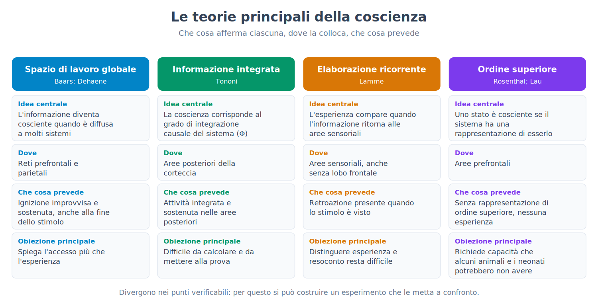
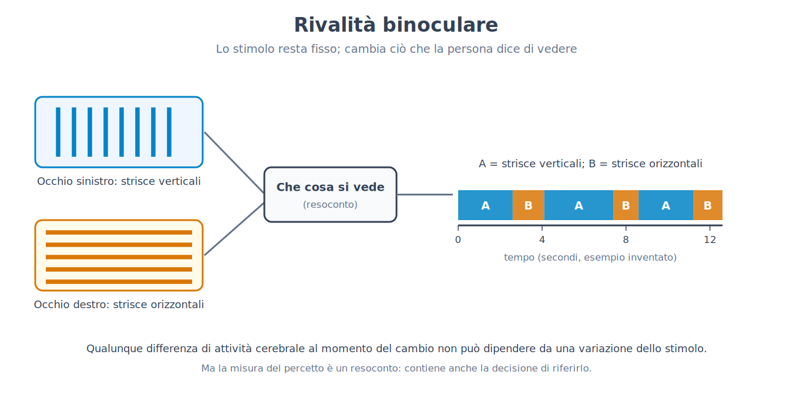
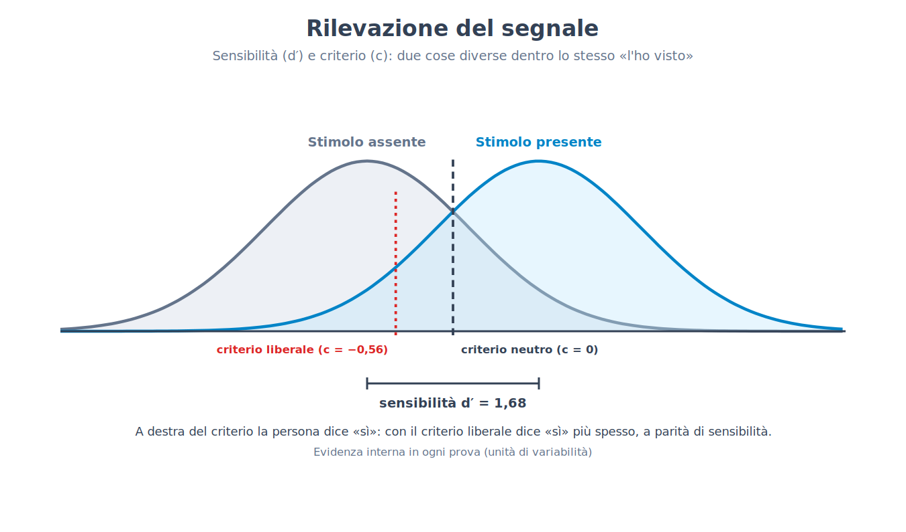
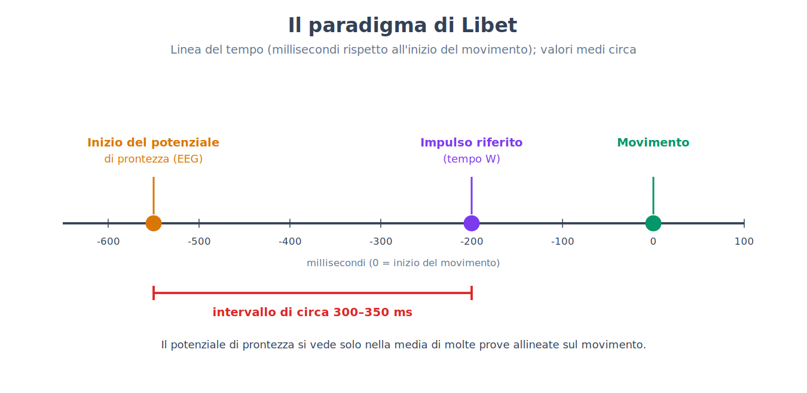
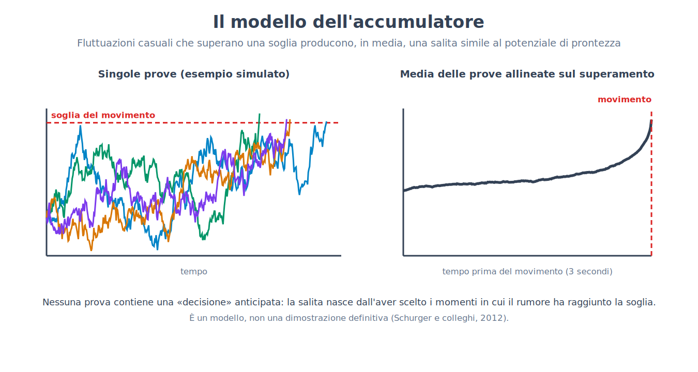
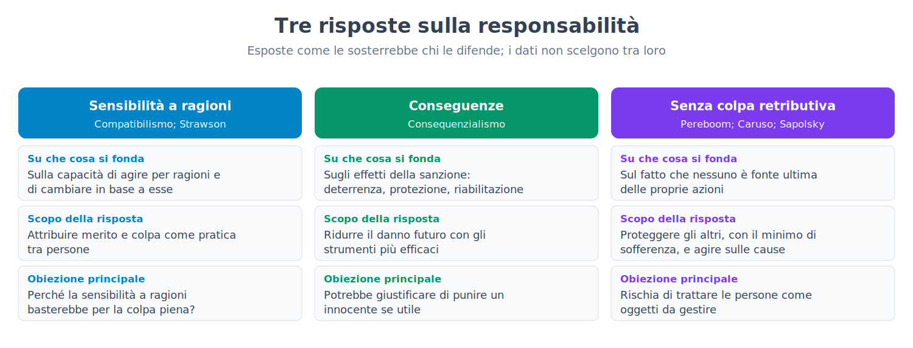
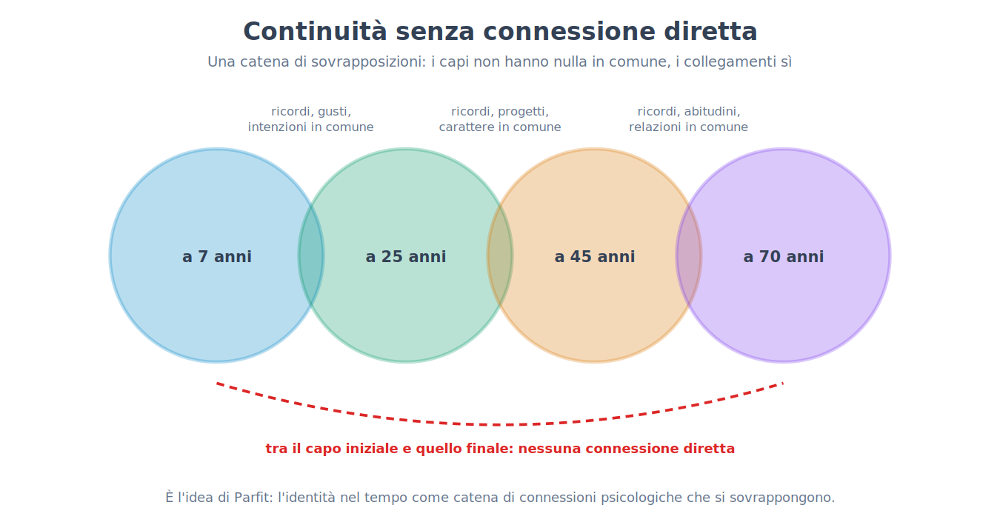
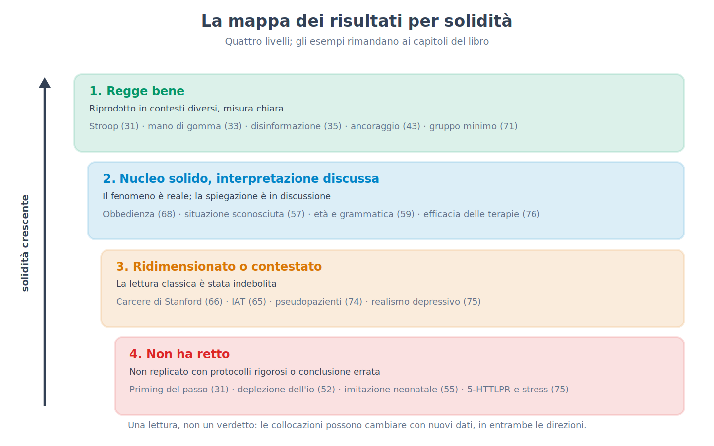

Parte XIII. Le tre domande che restano
Capitolo 78 — Coscienza: perché è un problema e non solo un mistero da risolvere
[IN DUE PAROLE]
Molti capitoli di questo libro hanno parlato di processi che avvengono senza che ce ne accorgiamo: percezione, memoria, decisione. Resta da chiedersi che cosa distingua ciò di cui ci accorgiamo da ciò che non raggiunge la consapevolezza, e perché ci sia «qualcosa che si prova» a vedere il rosso o ad avere mal di denti. Questo capitolo distingue tre significati della parola «coscienza», espone il problema che gli studiosi chiamano «difficile» e le risposte che gli sono state date, spiega che cosa sia un correlato neurale e che cosa non sia, presenta le teorie principali e racconta il primo confronto sperimentale diretto tra due di esse, concluso nel 2025. Lo scopo è far capire che cosa si sa, che cosa è in discussione e che cosa gli esperimenti possono e non possono decidere.
Chiunque legga questa pagina sa che cosa significa avere un'esperienza: c'è un modo in cui appare il rosso di un semaforo, un modo in cui si sente il sapore del caffè, un modo in cui fa male un dente. Nessuno deve imparare a farlo e nessuno può dimostrarlo a qualcun altro. È anche un fatto che la psicologia scientifica, per quasi tutto il Novecento, ha tenuto il tema ai margini: i capitoli 14–19 hanno raccontato come il comportamentismo avesse escluso dal programma ciò che non si poteva osservare dall'esterno, e i capitoli 29–31 hanno mostrato quanto lavoro il cervello faccia senza che l'interessato lo sappia. Dagli anni Ottanta e Novanta la coscienza è tornata a essere un oggetto di ricerca sperimentale, e questo capitolo e il successivo dicono che cosa se ne è fatto.
Il titolo del capitolo contiene una distinzione che conviene chiarire subito. Un enigma, in senso scientifico, è una domanda per la quale si sa più o meno che tipo di risposta cercare: come si produce l'energia nella cellula, come un ricordo si consolida. Un problema nel senso che qui interessa è una domanda per la quale non è chiaro nemmeno che aspetto avrebbe una risposta soddisfacente. Sulla coscienza, gli studiosi non concordano sul secondo punto, prima ancora che sul primo.
Tre cose che si chiamano «coscienza»
La parola italiana raccoglie almeno tre significati, e molte discussioni inutili nascono dallo scambio fra l'uno e l'altro. Il primo è la vigilanza (wakefulness, arousal): lo stato di chi è sveglio e reattivo, in contrasto con chi dorme di sonno profondo, è in anestesia generale o in coma. È la coscienza come livello, che il capitolo 26 ha toccato parlando del sonno, e che dipende da strutture del tronco encefalico e del talamo. Una persona può essere vigile senza che questo dica molto su che cosa viva in quel momento.
Il secondo significato è la coscienza di accesso (access consciousness), termine introdotto dal filosofo Ned Block (1995): il fatto che un'informazione sia disponibile al sistema nel suo insieme, cioè possa essere riportata a parole, usata per decidere, ricordata, combinata con altre informazioni. È una proprietà funzionale e si può studiare con i metodi del laboratorio: si chiede alla persona che cosa ha visto e si confronta la risposta con lo stimolo.
Il terzo è l'esperienza fenomenica (phenomenal consciousness): il fatto che ci sia qualcosa che si prova a essere in un certo stato. I filosofi chiamano qualia (qualia) gli aspetti qualitativi di questa esperienza, come il rosso del rosso o il dolore del dolore. Qui sta il problema: l'accesso si può misurare, l'esperienza è ciò che resta quando si è tolto tutto quello che si può misurare dall'esterno.
Da qui in poi, quando il testo dirà coscienza (consciousness) senza altri aggettivi, intenderà il fatto di avere un'esperienza di qualcosa, nel senso fenomenico; quando parlerà di accesso o di vigilanza lo dirà. Che i due ultimi significati possano separarsi, cioè che si possa avere accesso senza esperienza o esperienza senza accesso, è una delle questioni aperte, non una tesi che il testo adotti.
Il problema che si chiama «difficile»
Nel 1995 il filosofo David Chalmers propose di dividere le domande sulla coscienza in due gruppi. I «problemi facili» riguardano meccanismi: come il cervello discrimina gli stimoli, integra le informazioni, controlla il comportamento, produce un resoconto verbale di ciò che avviene al suo interno, distingue la veglia dal sonno. Si chiamano facili non perché lo siano nella pratica (richiedono decenni di lavoro) ma perché si sa che tipo di spiegazione cercare: si individua il meccanismo che svolge la funzione. Il problema difficile (hard problem) è un'altra domanda: perché lo svolgimento di queste funzioni è accompagnato da un'esperienza? Anche quando tutte le funzioni fossero spiegate, secondo Chalmers resterebbe da dire perché il processo non avvenga «al buio».
[QUESTIONE CONTROVERSA]
Le risposte al problema difficile si dividono in quattro famiglie principali, e nessuna ha prove decisive. La prima, difesa tra gli altri da Daniel Dennett, sostiene che il problema difficile, formulato così, non esista: una volta spiegati tutti i meccanismi che producono i nostri giudizi e resoconti sull'esperienza, non resterebbe nulla da spiegare, e l'intuizione che manchi qualcosa è un prodotto del modo in cui il cervello rappresenta sé stesso. Una variante radicale, l'illusionismo (illusionism) di Keith Frankish, dice che l'esperienza fenomenica come la descrivono i filosofi è essa stessa un'illusione, e che il compito vero è spiegare perché ci sembri di averla. La seconda famiglia accetta il problema e propone che la coscienza sia una proprietà non riducibile a quelle fisiche note: è il dualismo delle proprietà, che Chalmers stesso ha difeso in una forma da lui definita naturalistica. La terza, il panpsichismo (panpsychism), sostiene che una qualche forma di esperienza sia una caratteristica fondamentale della materia, e che quella umana ne sia una combinazione complessa. La quarta ammette che il problema sia reale ma che la mente umana non abbia gli strumenti per risolverlo (la posizione chiamata talvolta «nuovo misterianismo»). Nell'indagine svolta nel 2020 tra filosofi professionisti (PhilPapers), circa il 62% ha detto che il problema difficile esiste e circa il 30% che non esiste; i risultati sono qui ripresi da una rassegna secondaria, e vanno letti come fotografia di un'opinione e non come prova.
Perché un libro di psicologia sperimentale dovrebbe occuparsene? Per due ragioni. La prima è che la risposta che si dà al problema difficile cambia che cosa un esperimento sulla coscienza sia considerato capace di dimostrare. Se non c'è nulla oltre ai meccanismi, studiare i meccanismi è tutto ciò che c'è da fare; se c'è qualcosa oltre, nessun elenco di meccanismi basterà. La seconda è che gli esperimenti procedono comunque, e lo fanno assumendo, a volte senza dirlo, una risposta. Il capitolo successivo è dedicato a ciò che gli strumenti usati misurano in effetti.
[ATTENZIONE AL SALTO]
Dal fatto che oggi non si sappia spiegare l'esperienza non segue che non si potrà mai spiegare, né che la spiegazione sia non fisica. La storia della scienza conosce domande che sembravano di principio irrisolvibili (la differenza tra materia vivente e non vivente, per esempio) e che hanno perso il loro carattere di problema quando i meccanismi sono stati compresi; conosce però anche domande che sono rimaste aperte per secoli. Il fatto che una questione sia difficile non dice a quale dei due gruppi appartenga. Il salto opposto è altrettanto da evitare: dal fatto che sia stata trovata una correlazione robusta tra un'attività cerebrale e un'esperienza non segue che l'esperienza sia «spiegata».
Correlati neurali: che cosa si cerca
Con questa incertezza di fondo, la ricerca ha adottato un obiettivo più modesto e praticabile. Dal 1990 Francis Crick e Christof Koch proposero di cercare i correlati neurali della coscienza (neural correlates of consciousness, NCC): l'insieme minimo di eventi e meccanismi cerebrali che, insieme, bastano a produrre una determinata esperienza cosciente. Lo scopo era evitare di discutere la natura della coscienza e di concentrarsi su una domanda che si può sottoporre a esperimento: che cosa cambia nel cervello quando la stessa informazione, fisicamente identica, è vista consapevolmente oppure no?
Questa domanda impone un disegno preciso, detto disegno contrastivo (contrastive design): si confrontano due condizioni nelle quali lo stimolo è lo stesso e cambia solo il fatto di averlo visto. Si può ottenere in molti modi: rendendo lo stimolo così debole che solo a volte viene percepito, mascherandolo con un secondo stimolo, presentando due immagini diverse ai due occhi (capitolo 79), oppure cogliendo il momento in cui l'attenzione è altrove (la cecità all'inattesa del capitolo 30). In tutti i casi si misura l'attività cerebrale (con le tecniche del capitolo 24) e si cerca che cosa differenzi le prove «visto» dalle prove «non visto».
La letteratura distingue poi tra livelli. Le condizioni di fondo (la vigilanza e il funzionamento del tronco e del talamo) sono necessarie, ma non spiegano perché si veda questo e non quello. I correlati dei contenuti riguardano invece la specificità: l'attività di certe popolazioni di neuroni accompagna il vedere un volto, quella di altre il vedere una casa. Resta il problema, riconosciuto dagli stessi autori, di separare ciò che accompagna l'esperienza da ciò che la precede (un processo di preparazione, per esempio) e da ciò che la segue (la decisione di riferirla, la memoria). Se lo si studia chiedendo alle persone di riferire che cosa hanno visto, parte di ciò che si misura è l'atto del riferire, non l'esperienza. Su questa difficoltà tornerà il capitolo 79.
Quando la domanda diventa clinica
La coscienza non è soltanto un tema filosofico. Dopo un trauma cranico o un arresto cardiaco, alcune persone passano settimane o anni in uno stato in cui, al letto, non mostrano segni di consapevolezza: aprono gli occhi ma non seguono con lo sguardo e non rispondono ai comandi. I medici distinguono lo stato vegetativo (vegetative state), nel quale mancano segni comportamentali di consapevolezza, e lo stato di minima coscienza (minimally conscious state), nel quale compaiono segni inconsistenti ma riproducibili. La domanda cruciale è se dietro la mancanza di risposta ci sia assenza di esperienza o solo incapacità di esprimerla.
Nel 2006 il gruppo di Adrian Owen riferì il caso di una giovane donna in stato vegetativo dopo un incidente stradale, che durante la risonanza magnetica funzionale mostrava, quando le si chiedeva di immaginare di giocare a tennis o di camminare per la propria casa, attività in regioni diverse del cervello, simile a quella di volontari sani. Nel 2010 Martin Monti e colleghi, in un lavoro più ampio, testarono 54 pazienti con disturbi della coscienza (vegetativi e in stato di minima coscienza): cinque furono in grado di modulare volontariamente l'attività cerebrale in risposta alle istruzioni. Uno di loro, un uomo di 22 anni, fu invitato a rispondere a domande con sì o no immaginando di giocare a tennis (sì) o di passeggiare in casa (no): rispose correttamente a cinque domande su sei, come poté verificare la madre.
[IL DISEGNO DELL'ESPERIMENTO]
Che cosa si manipolava. Le istruzioni date al paziente: immaginare un'attività motoria (giocare a tennis) oppure una navigazione spaziale (muoversi per la propria casa), alternate a periodi di riposo.
Che cosa si misurava. Il segnale BOLD (capitolo 24) nelle regioni che, nei volontari sani, si attivano in modo diverso nei due compiti: l'area motoria supplementare per il tennis, regioni parietali e dell'ippocampo e della sua vicinanza per la navigazione.
Che cosa si teneva costante. Il protocollo di immaginazione, applicato anche a un gruppo di volontari sani, di cui si conoscevano le attivazioni tipiche.
Quanti soggetti. Nel lavoro del 2010: 54 pazienti con diagnosi di stato vegetativo o di minima coscienza; cinque mostrarono risposte volontarie.
Che cosa avrebbe falsificato l'ipotesi. L'assenza di qualsiasi differenza specifica tra le attivazioni del paziente nei due compiti, oppure differenze non riproducibili da una sessione all'altra.
Che cosa è venuto fuori. Una frazione dei pazienti mostrava risposte coerenti con la comprensione e l'esecuzione volontaria dei compiti. L'assenza di risposta al letto, dunque, non basta a escludere la consapevolezza.
Se e come è stato replicato. L'approccio è stato esteso da altri gruppi con diverse tecniche, tra cui l'elettroencefalogramma; le stime della frazione di pazienti con consapevolezza nascosta variano molto tra gli studi e dipendono dai criteri adottati, per cui nel testo non se ne dà una cifra unica.
Il risultato ha un valore pratico immediato (cambia il modo in cui si valutano i pazienti e si parla con le famiglie), e ha un limite che gli autori hanno riconosciuto: un risultato negativo non prova l'assenza di coscienza, perché il paziente potrebbe essere cosciente ma incapace di eseguire il compito, o addormentato in quel momento. Il metodo misura la capacità di seguire un'istruzione mentale; non misura direttamente l'esperienza.
Le teorie principali
Sulle basi dell'esperienza coscienziale sono state proposte decine di teorie. Si possono ordinare, con qualche semplificazione, in poche famiglie. Il confronto che segue serve a dire che cosa ciascuna afferma, dove colloca la coscienza e che cosa prevede in un esperimento, non a proclamare un vincitore.
La teoria dello spazio di lavoro globale (global workspace theory, GWT), proposta da Bernard Baars nel 1988 e sviluppata nella versione neuronale da Stanislas Dehaene, descrive il cervello come un insieme di sistemi specializzati che lavorano in parallelo e per lo più al buio. Un'informazione diventa cosciente quando vince una competizione e viene diffusa su larga scala a molti altri sistemi (memoria, linguaggio, pianificazione), cosa che si pensa avvenga con un'attivazione improvvisa e sostenuta di una rete diffusa, con forti contributi delle aree prefrontali e parietali, detta ignizione (ignition). È una teoria dell'accesso: spiega bene perché ciò che è cosciente sia riportabile e utilizzabile, e lascia aperta la questione dell'esperienza.
La teoria dell'informazione integrata (integrated information theory, IIT), di Giulio Tononi, parte dall'altro capo: dalle proprietà che l'esperienza ha in sé (esiste, è specifica, è unitaria, è definita, è strutturata) e ne deduce quali proprietà fisiche deve avere un sistema perché la possieda. Il suo indice, indicato con la lettera greca Φ (phi), misura quanto un sistema è integrato, cioè quanto il suo comportamento causale non si può scomporre nelle parti. Predice che la coscienza abbia sede nelle aree posteriori della corteccia, in cui l'organizzazione è molto integrata, più che in quelle prefrontali; e implica che la coscienza dipenda dalla struttura fisica del sistema e non dal programma che esegue.
Le teorie ricorrenti (recurrent processing theories), associate a Victor Lamme, sostengono che l'esperienza compaia quando l'informazione visiva non si limita a salire attraverso le aree sensoriali ma ritorna indietro con circuiti di retroazione, e non richiedono il coinvolgimento prefrontale. Le teorie del pensiero di ordine superiore (higher-order theories), associate a David Rosenthal e, nelle versioni sperimentali, a Hakwan Lau, dicono che uno stato è cosciente quando il sistema ha una rappresentazione di essere in quello stato: in questo modo la coscienza richiede una forma di auto-rappresentazione. Altre proposte, tra cui le teorie basate sulla predizione e sulla rappresentazione dell'attenzione di Michael Graziano, tentano di spiegare perché i sistemi che si modellano come consapevoli arrivino a dire di esserlo.

[QUESTIONE CONTROVERSA]
Le teorie divergono proprio nei punti verificabili. Se vale lo spazio di lavoro, la coscienza richiede l'ignizione prefrontale e parietale; se vale la teoria dell'informazione integrata, basta e occorre un'organizzazione integrata delle aree posteriori, e il lobo frontale partecipa al resoconto più che all'esperienza. Questa divergenza permette un esperimento in cui le previsioni contrastanti si mettono a confronto, e proprio questo è stato fatto.
Il primo confronto diretto: una collaborazione tra avversari
Nel campo della coscienza, come in molti altri, ciascun gruppo tende a progettare esperimenti che la propria teoria spiega bene. Per ridurre questo rischio è stata sperimentata una procedura chiamata collaborazione avversaria (adversarial collaboration): i sostenitori di due teorie rivali, insieme a un gruppo neutrale, concordano prima dell'esperimento quali risultati ciascuna teoria prevede, e si impegnano pubblicamente a considerare falsificata o indebolita la propria teoria se le previsioni non si realizzano. Il consorzio Cogitate ha applicato questo metodo a due teorie, lo spazio di lavoro globale e l'informazione integrata, e ha pubblicato i risultati su Nature il 30 aprile 2025.
[IL DISEGNO DELL'ESPERIMENTO]
Che cosa si manipolava. Le persone vedevano immagini singole (volti, oggetti, lettere, simboli senza significato) in tre orientamenti diversi, mostrate per 0,5, 1,0 o 1,5 secondi, mentre cercavano un bersaglio prestabilito: in questo modo si poteva variare ciò che si vedeva, per quanto tempo e se era rilevante per il compito.
Che cosa si misurava. L'attività cerebrale con tre tecniche complementari: risonanza magnetica funzionale (fMRI), magnetoencefalografia (MEG) ed elettroencefalografia intracranica (iEEG), quest'ultima in pazienti con elettrodi impiantati per ragioni cliniche.
Che cosa si teneva costante. Il paradigma, le istruzioni e i criteri di analisi, tutti registrati in anticipo, con le previsioni delle due teorie sottoscritte dai rispettivi sostenitori prima della raccolta dei dati.
Quanti soggetti. 256 persone in totale: 120 con fMRI, 102 con MEG e 34 con iEEG.
Che cosa avrebbe falsificato le teorie. Per lo spazio di lavoro: l'assenza di un'attivazione prefrontale (ignizione) all'inizio e alla fine dello stimolo, oppure l'assenza di informazione sui contenuti nella corteccia prefrontale. Per l'informazione integrata: l'assenza di una sincronizzazione sostenuta nelle aree posteriori per tutta la durata dello stimolo.
Che cosa è venuto fuori. Le categorie degli stimoli (volto, oggetto, lettera) si potevano decodificare dalle aree posteriori e, in modo più breve, dalla corteccia prefrontale; l'orientamento si decodificava dalle aree posteriori ma quasi per nulla da quelle prefrontali. Nessun elettrodo prefrontale mostrò il segnale di accensione alla fine dello stimolo che lo spazio di lavoro prevedeva. Solo un piccolo numero di elettrodi posteriori seguì la durata dello stimolo, e questo sostenne in parte l'informazione integrata; ma l'informazione sull'orientamento nelle aree posteriori si spense dopo circa mezzo secondo, contro la previsione di quella teoria, e la sincronizzazione sostenuta attesa non comparve. Le misure di connettività non sostennero né l'una né l'altra in modo netto.
Se e come è stato replicato. Fa parte di un programma più ampio di collaborazioni avversarie; al momento in cui si scrive non risulta una replicazione indipendente.
Come si interpreta il risultato? Gli autori hanno concluso che i dati sono compatibili con alcune previsioni di entrambe le teorie e mettono in difficoltà aspetti centrali di tutte e due: per l'informazione integrata, l'assenza di sincronizzazione sostenuta nelle aree posteriori; per lo spazio di lavoro, la mancanza dell'ignizione alla fine dello stimolo e la scarsa rappresentazione prefrontale di alcune caratteristiche coscienti. Hanno aggiunto che alcune di queste difficoltà potrebbero riguardare anche altre teorie che fanno previsioni simili. Le reazioni sono state diverse: alcuni sostenitori hanno contestato che le previsioni testate fossero quelle essenziali della propria teoria, e alcuni commentatori hanno sottolineato che l'esperimento mette in discussione la teoria di quanto risulta, non di che cosa sia l'esperienza.
[REGGE ANCORA?]
Un altro episodio mostra quanto il campo sia teso. Nel settembre 2023, mentre i primi risultati circolavano in forma preliminare, 124 studiosi firmarono una lettera aperta in cui sostenevano che la teoria dell'informazione integrata dovesse essere considerata «pseudoscienza» finché non fosse formulata in modo empiricamente verificabile; la lettera ha provocato risposte di segno opposto e, in sede editoriale, la presa di distanza da quel linguaggio da parte di chi ha pubblicato la collaborazione avversaria su Nature. Il testo non prende posizione su quell'etichetta: osserva soltanto che ciò che è stato messo alla prova nel 2025 non è la teoria nel suo insieme ma alcune sue previsioni sperimentali, e che l'articolo stesso riassume i risultati così: concordano con alcune previsioni di entrambe le teorie e ne mettono in seria difficoltà alcuni capisaldi. La decodifica del contenuto cosciente era compatibile con entrambe; il mantenimento del contenuto nel tempo contraddiceva ciò che ciascuna prevedeva (nessuna sincronizzazione sostenuta nella corteccia posteriore per l'informazione integrata, nessuna ignizione alla scomparsa dello stimolo per lo spazio di lavoro); l'analisi di connettività preregistrata non sosteneva nessuna delle due. Il dibattito sulla verificabilità, sulla scelta delle previsioni e sulla portata filosofica della teoria continua.
E le macchine?
La domanda se un sistema artificiale possa essere cosciente sta diventando pratica, e le teorie danno risposte diverse proprio perché divergono sulle premesse. Qui si esce dal terreno dei dati: nessun esperimento attuale è in grado di decidere. Una teoria che identifica la coscienza con una certa organizzazione funzionale (come lo spazio di lavoro) lascia in linea di principio aperta la possibilità che un sistema artificiale con quell'organizzazione sia cosciente; la teoria dell'informazione integrata, che attribuisce la coscienza alla struttura causale fisica del sistema, afferma invece che un calcolatore digitale non lo sarebbe, qualunque programma eseguisse. Il fatto che un sistema produca frasi come «provo qualcosa» non dice nulla sull'esperienza, perché frasi di quel tipo abbondano nei testi su cui i sistemi di linguaggio vengono addestrati. La cautela vale in entrambe le direzioni: non esistono ragioni sufficienti né per attribuire coscienza a un programma né per escluderla in modo definitivo.
[NUMERI]
• Collaborazione avversaria Cogitate (Nature, 30 aprile 2025): 256 partecipanti (fMRI 120, MEG 102, iEEG 34); stimoli mostrati per 0,5, 1,0 o 1,5 secondi; tre previsioni preregistrate: decodifica del contenuto compatibile con entrambe le teorie, mantenimento del contenuto contrario a entrambe, connettività preregistrata a favore di nessuna.
• Lettera aperta sull'informazione integrata (settembre 2023): 124 firmatari.
• Monti e colleghi (2010): 54 pazienti con disturbi della coscienza, cinque con risposte volontarie; un paziente rispose correttamente a cinque domande su sei.
• Indagine PhilPapers 2020 (fonte secondaria): circa il 62% dei filosofi dice che il problema difficile esiste, circa il 30% che non esiste.
[MINI-CRONOLOGIA]
• 1988: Baars propone lo spazio di lavoro globale.
• 1990: Crick e Koch propongono di cercare i correlati neurali della coscienza.
• 1995: Chalmers formula il problema difficile; Block distingue coscienza di accesso e fenomenica.
• 2004: Tononi formula la teoria dell'informazione integrata.
• 2006: Owen e colleghi: immaginazione motoria in una paziente in stato vegetativo.
• 2010: Monti e colleghi: comunicazione sì/no in un paziente con disturbo della coscienza.
• 2023: lettera aperta sull'informazione integrata.
• 2025: pubblicazione della collaborazione avversaria Cogitate su Nature.
[IL PUNTO CHIAVE DEL CAPITOLO]
• «Coscienza» indica almeno tre cose: vigilanza, accesso (informazione disponibile per riferire e decidere) ed esperienza fenomenica (che cosa si prova). Molti equivoci nascono dal confonderle.
• Il problema difficile chiede perché le funzioni cerebrali siano accompagnate da un'esperienza; le risposte (negazione del problema, illusionismo, dualismo delle proprietà, panpsichismo) non sono decise dai dati attuali.
• La ricerca sperimentale cerca i correlati neurali con un disegno contrastivo (stesso stimolo, visto o non visto), con la difficoltà di separare ciò che accompagna l'esperienza da ciò che la precede e la segue.
• Una frazione dei pazienti senza segni al letto mostra, alla risonanza, risposte volontarie (Monti e colleghi, 2010); un risultato negativo, però, non dimostra l'assenza di coscienza.
• Le teorie principali divergono su ciò che si può verificare; il primo confronto diretto (Cogitate, 2025, 256 persone) ha messo in difficoltà aspetti centrali di entrambe le teorie messe alla prova senza proclamare un vincitore.
• Quanto alla coscienza delle macchine, nessun esperimento attuale può decidere, e le teorie danno risposte opposte.
Capitolo 79 — Che cosa misurano gli esperimenti sulla coscienza
[IN DUE PAROLE]
Gli esperimenti sulla coscienza si basano quasi sempre su una cosa sola: qualcuno dice di aver visto o di non aver visto. Questo capitolo mostra come si costruisce un contrasto tra «visto» e «non visto» (rivalità binoculare, mascheramento), perché il resoconto non misura l'esperienza ma una decisione che la riguarda, come la teoria della rilevazione del segnale permetta di separare sensibilità e prudenza, che cosa cambino le scale di consapevolezza e i paradigmi senza resoconto, e che cosa resti della questione se l'esperienza ecceda ciò che si riesce a riferire. È il capitolo del libro più severo sul metodo: dice con precisione che cosa si può concludere da un esperimento sulla coscienza e che cosa no.
Il capitolo 78 ha lasciato in sospeso una domanda pratica: se la coscienza è ciò che si prova, come la si studia in laboratorio? La risposta onesta comincia con una constatazione scomoda. Un esperimento sulla coscienza ha bisogno che qualcuno dica che cosa ha visto, o che un'altra misura indichi che lo ha visto. Chi analizza i dati ha dunque tra le mani il resoconto, o una misura calibrata sul resoconto, e deve chiedersi ogni volta che cosa stia misurando: l'esperienza, la decisione di dichiararla, la capacità di ricordarla un secondo dopo, o la tendenza di quella persona a dire «sì» nel dubbio.
Il capitolo 1 aveva già segnalato un aspetto di questo problema: le persone sanno dire con sicurezza che cosa vedono o provano, ma sanno meno bene perché hanno agito come hanno agito, e possono confabulare spiegazioni plausibili. Qui il bersaglio è un altro, ma la cautela è la stessa. Un resoconto sul contenuto («ho visto un volto») è più affidabile di uno sulle cause, e tuttavia anch'esso passa per una decisione.
Il contrasto visto/non visto
Il metodo del capitolo 78, il disegno contrastivo, richiede uno stimolo fisicamente identico che in certe prove viene percepito e in altre no. Due procedure producono questa situazione in modo controllabile.
La prima è la rivalità binoculare (binocular rivalry). Se a ciascun occhio si presenta un'immagine diversa (per esempio un volto a sinistra e una casa a destra, in modo che non si possano fondere), la persona non vede un miscuglio stabile ma un'alternanza: per alcuni secondi domina una delle due, poi l'altra, poi di nuovo la prima, senza che lo stimolo fisico cambi. Il fenomeno era noto a Giambattista della Porta nel 1593 e fu descritto con precisione da Charles Wheatstone nel 1838.

Per chi studia la coscienza è un'occasione rara: lo stimolo è costante, la percezione cambia, e dunque ciò che cambia nel cervello al momento del passaggio non può dipendere da una variazione dello stimolo.
[IL DISEGNO DELL'ESPERIMENTO]
Che cosa si manipolava. Due immagini diverse, mostrate una per occhio in modo che entrassero in rivalità; negli studi con le scimmie, immagini come grate a orientamenti diversi o volti, nell'uomo volti e case.
Che cosa si misurava. Nelle scimmie, addestrate a segnalare con una leva quale immagine stessero vedendo, l'attività di singoli neuroni in diverse aree visive (studi di Nikos Logothetis e collaboratori, dalla fine degli anni Ottanta); nell'uomo, con la risonanza magnetica funzionale, l'attività di regioni selettive per i volti e per le case (Tong e colleghi, 1998).
Che cosa si teneva costante. Lo stimolo fisico presentato a ciascun occhio per tutta la durata della prova.
Quanti soggetti. Pochi animali, studiati a lungo con registrazioni di molti neuroni, negli studi di singole cellule; gruppi di volontari sani nelle ricerche di imaging.
Che cosa avrebbe falsificato l'ipotesi. Se l'attività di un'area fosse rimasta identica al variare del percetto e avesse seguito soltanto lo stimolo, quell'area non avrebbe potuto essere considerata un correlato dell'esperienza.
Che cosa è venuto fuori. Nelle aree visive più precoci (V1) solo una minoranza di neuroni seguiva il percetto, mentre la maggior parte continuava a seguire lo stimolo fisico; salendo verso le aree della corteccia temporale inferiore, la maggioranza dei neuroni cambiava attività insieme al percetto. Nell'uomo, la regione per i volti e quella per le case si attivavano in alternanza con ciò che la persona dichiarava di vedere.
Se e come è stato replicato. Il risultato generale (una dipendenza dal percetto crescente lungo la gerarchia visiva) è stato ripreso con tecniche diverse; il valore esatto delle percentuali dipende da specie, area e stimolo, e non si riporta qui.
La conclusione di questo corpo di ricerche è che l'esperienza visiva non è «scritta» in un punto solo: l'attività nelle aree precoci riflette soprattutto ciò che arriva dall'occhio, quella delle aree più alte riflette sempre più ciò che si vede. Ma il metodo ha un limite che qui conta: nelle scimmie la misura del percetto era la leva premuta, nell'uomo la dichiarazione della persona. Qualunque differenza di attività osservata al momento del cambio contiene dunque anche la preparazione e l'esecuzione di quel gesto.
La seconda procedura è il mascheramento (masking): uno stimolo (una parola, un volto, una forma) viene mostrato per una frazione di secondo e subito seguito o preceduto da un secondo stimolo, la maschera, che ne impedisce l'identificazione. Variando l'intervallo tra i due si può portare lo stimolo vicino alla soglia, in modo che sia visto in alcune prove e non in altre pur essendo, nell'insieme, identico. Su questa base si è osservato che l'elaborazione iniziale nelle aree sensoriali è spesso simile nelle prove «visto» e «non visto», mentre nelle prove «visto» compare in seguito (nell'ordine dei tre-quattrocento millisecondi) una fase di attività più ampia, sostenuta e diffusa, in accordo con l'idea di ignizione del capitolo 78. Lo stesso metodo ha permesso gli esperimenti di priming del capitolo 31, nei quali uno stimolo non identificato influenza ancora la risposta successiva.
[CONVINZIONE DIFFUSA]
«Le immagini cerebrali hanno mostrato dove nasce la coscienza.» Gli studi di rivalità e di mascheramento mostrano dove e quando l'attività cerebrale cambia insieme a ciò che la persona dichiara di aver visto; non dicono che quella regione «produca» l'esperienza. Il capitolo 24 aveva presentato il problema dell'inferenza inversa: dal fatto che una regione si attivi quando una persona vede non segue che l'attivazione sia l'esperienza, perché la stessa regione si attiva in molte altre condizioni, e la stessa attività può avere un ruolo di preparazione, di attenzione o di decisione. In questo campo l'avvertenza pesa più che altrove, perché la variabile da spiegare (essere coscienti di qualcosa) è definita in base a un resoconto.
Che cosa c'è dentro un «l'ho visto»
Supponiamo che a due persone si mostri la stessa debole luce, in metà delle prove, e che si chieda loro di dire «sì» se l'hanno vista e «no» altrimenti. La prima dice «sì» nell'80% delle prove in cui la luce c'era (colpi (hits)) e nel 20% delle prove in cui non c'era (falsi allarmi (false alarms)). La seconda dice «sì» nel 92% delle prove con luce, ma anche nel 39% delle prove senza. Chi vede meglio? Non si può rispondere guardando solo i colpi: la seconda persona ne ha di più, ma ha anche molti più falsi allarmi, e potrebbe semplicemente essere più disposta a dire «sì» nel dubbio.
La teoria della rilevazione del segnale (signal detection theory), già accennata nel capitolo 28 come uno dei perfezionamenti della psicofisica, permette di separare le due componenti. Si suppone che in ogni prova l'evidenza interna sia una grandezza variabile, di media più alta quando lo stimolo c'è che quando non c'è; la persona dice «sì» quando l'evidenza supera un livello che si chiama criterio (criterion). La distanza tra le due distribuzioni, misurata in unità di variabilità, è la sensibilità (sensitivity, d′); la posizione del criterio dice quanto la persona sia incline a rispondere «sì».
[FORMULA]
d′ = z(C) − z(F) e c = −[z(C) + z(F)] / 2
Dove:
• d′ (d primo) è la sensibilità: quanto bene la persona distingue la presenza dall'assenza dello stimolo; vale 0 se non distingue nulla e cresce con la capacità di discriminare (è senza unità, perché misurata in deviazioni standard);
• C è la proporzione di colpi (risposte «sì» quando lo stimolo c'era) e F la proporzione di falsi allarmi (risposte «sì» quando non c'era);
• z( ) è la trasformazione che converte una proporzione nel corrispondente valore sulla curva normale standard (per esempio z(0,50) = 0, z(0,84) ≈ 1);
• c è la posizione del criterio: vale 0 se la persona è equidistante tra «sì» e «no», è negativa se tende a dire «sì» anche con poca evidenza (criterio liberale) e positiva se tende a dire «no» (criterio prudente).
Esempio di calcolo. Prima persona: C = 0,80 e F = 0,20, quindi z(0,80) ≈ 0,84 e z(0,20) ≈ −0,84; d′ = 0,84 − (−0,84) = 1,68 e c = −(0,84 − 0,84) / 2 = 0. Seconda persona: C = 0,92 e F = 0,39, quindi z(0,92) ≈ 1,41 e z(0,39) ≈ −0,28; d′ = 1,41 − (−0,28) ≈ 1,69 (1,68 con i valori non arrotondati) e c = −(1,41 − 0,28) / 2 ≈ −0,56. Una terza persona con C = 0,62 e F = 0,08 (z ≈ 0,31 e −1,41) ha d′ ≈ 1,7 e c ≈ +0,55. Le tre persone vedono altrettanto bene (d′ circa 1,7); differiscono soltanto per prudenza: la seconda risponde «sì» con facilità, la terza con riluttanza.

La lezione per la ricerca sulla coscienza è diretta. Se un esperimento confronta le prove «visto» e «non visto» di una persona, oppure di due gruppi, e le condizioni differiscono nel criterio più che nella sensibilità, la differenza nell'attività cerebrale può riflettere la decisione di dire «sì» più che l'esperienza. Un modo per tenere sotto controllo il problema è costruire condizioni nelle quali la prestazione (la capacità di discriminare) sia uguale e cambi soltanto la dichiarazione di aver visto: nel lavoro di Hakwan Lau e Richard Passingham (2006), per esempio, due condizioni di mascheramento davano la stessa accuratezza nel compito e un diverso grado di consapevolezza riferita, e le differenze di attività tra le due furono lette come più vicine alla consapevolezza che alla prestazione. È un ragionamento elegante, e la sua conclusione resta discussa: dipende dal fatto che l'uguaglianza della prestazione riguardi lo stesso compito per cui si misura la consapevolezza.
Scale, scommesse e fiducia
Se «sì/no» è una misura povera, si può chiedere di più. La scala di consapevolezza percettiva (perceptual awareness scale, PAS), proposta da Ramsøy e Overgaard nel 2004, chiede alla persona di classificare l'esperienza su quattro gradi: nessuna esperienza dello stimolo, un'impressione vaga, un'esperienza quasi chiara, un'esperienza chiara. Si lascia così parlare della gradualità anziché imporre un taglio netto, a costo di affidarsi a una scala il cui significato può variare da persona a persona. Un'altra strategia è chiedere alla persona di scommettere sulla correttezza della propria risposta: se la consapevolezza è presente, ci si aspetta puntate alte quando si è giusti e basse quando si sbaglia. Ma le scommesse misurano anche l'avversione al rischio, come ricorda la letteratura sulla decisione del capitolo 44, e non risolvono il problema del criterio, lo spostano. Le valutazioni di fiducia sulla propria risposta (capitolo 46) offrono una misura di metacognizione, e la fiducia può dissociarsi dall'esperienza.
[ATTENZIONE AL SALTO]
Nessuna di queste scale misura l'esperienza: misurano un resoconto, ogni volta con un diverso insieme di assunzioni. Dal fatto che due condizioni differiscano nella scala non segue che differiscano per la coscienza, e dal fatto che non differiscano non segue che la coscienza sia uguale. La scelta della scala è già una scelta teorica, e lo stesso dato letto con una scala a due gradi o a quattro può dare conclusioni opposte, come mostra il caso seguente.
Vedere senza vedere?
Dopo lesioni della corteccia visiva primaria (V1), alcune persone riferiscono di essere cieche in una porzione del campo visivo. Negli anni Settanta Lawrence Weiskrantz e collaboratori osservarono che, se in quella zona si presentavano stimoli e si chiedeva di indovinare (per esempio se una forma fosse orizzontale o verticale, o dove fosse un punto luminoso), i pazienti rispondevano ben oltre il caso pur dicendo di non vedere nulla. Il fenomeno prese il nome di vista cieca (blindsight). Alla lettura più radicale, un'elaborazione visiva senza alcuna esperienza, la letteratura ha aggiunto una distinzione: in una variante i pazienti non hanno alcuna consapevolezza dello stimolo, in un'altra avvertono che qualcosa è cambiato (per esempio un movimento) senza un'esperienza propriamente visiva.
[REGGE ANCORA?]
La vista cieca è un fenomeno reale, nel senso che la prestazione sopra il caso in assenza di una dichiarazione di visione è stata riprodotta in molti pazienti e laboratori. È meno solida la sua interpretazione più forte, cioè che dimostri una visione completamente priva di esperienza. Morten Overgaard e colleghi (2008, in una sola paziente con una lesione occipitale) hanno osservato che, quando a un paziente si offre una scala a più gradi (come la PAS) invece di «vedo/non vedo», parte delle risposte corrette si accompagna a un'impressione debole, che la domanda a due sole risposte costringeva a classificare come «niente». Se il criterio del paziente è prudente (dopo una lesione ha buoni motivi per non fidarsi di ciò che vede), una visione degradata ma presente potrebbe essere dichiarata assente. Anche per questa ragione il campo non considera la questione chiusa; il punto metodologico, in ogni caso, vale a prescindere da chi abbia ragione: dichiarare «niente» è una decisione.
Prerequisiti, conseguenze e paradigmi senza resoconto
Il capitolo 78 ha ricordato che ciò che si misura al momento del «visto» può essere un prerequisito (l'attenzione, la preparazione) o una conseguenza (la decisione di riferire, il ricordo dello stimolo). Per separare questi ingredienti si sono sviluppati i paradigmi senza resoconto (no-report paradigms): l'idea è di dedurre il contenuto dell'esperienza da misure che non richiedono di dichiarare nulla, come i movimenti oculari involontari che seguono la direzione percepita in una rivalità, o il diametro della pupilla, e di confrontare l'attività cerebrale delle prove in cui il resoconto è richiesto con quelle in cui non lo è. Nel 2015 Naotsugu Tsuchiya e colleghi li presentarono come un modo di estrarre «i veri correlati neurali» ripulendoli da ciò che appartiene al riferire. In alcuni studi l'ampia onda tardiva di attività che accompagna il «visto» (come la componente chiamata P3b, nell'elettroencefalogramma) si riduce o scompare quando il resoconto non è richiesto, il che suggerisce che una parte del segnale classico dell'ignizione appartenga alla preparazione e alla comunicazione della risposta più che all'esperienza.
Il risultato è rilevante perché non è neutro tra le teorie. Chi pensa che la coscienza dipenda dall'ampia diffusione prefrontale vede nel ridimensionamento dei segnali tardivi una minaccia; chi la colloca nelle aree posteriori vi legge un sostegno. Anche i paradigmi senza resoconto hanno però un problema: per sapere che la direzione dello sguardo corrisponde al percetto, bisogna averlo calibrato in condizioni in cui le persone riferivano il percetto, e si assume che la corrispondenza tenga quando non lo fanno. Ogni via d'uscita dal resoconto passa per una prima volta in cui il resoconto c'era.
L'esperienza eccede ciò che si riesce a riferire?
C'è un'ultima questione, forse la più difficile da trattare con gli strumenti descritti. Nel 1960 George Sperling mostrò per 50 millisecondi matrici di lettere (per esempio tre righe da quattro) e chiese di riferirne il più possibile: le persone ne ricordavano in media da tre a cinque, circa un terzo delle dodici. Poi introdusse una variante: subito dopo la scomparsa della matrice un suono indicava quale riga riferire. Poiché la persona non sapeva in anticipo quale riga sarebbe stata richiesta, la prestazione su quella riga stimava ciò che era disponibile dell'intera matrice: circa il 75% delle lettere, cioè più di quanto la prova di resoconto completo potesse far pensare. La disponibilità però svaniva in fretta: dopo circa un secondo del ritardo del suono, le due prestazioni coincidevano.
[IL DISEGNO DELL'ESPERIMENTO]
Che cosa si manipolava. Il tipo di resoconto (completo o parziale, cioè limitato a una riga indicata da un suono) e il ritardo tra la scomparsa della matrice e il suono (0, 150, 500 e 1000 millisecondi).
Che cosa si misurava. Il numero di lettere riferite correttamente.
Che cosa si teneva costante. La matrice di lettere, il tempo di esposizione (50 millisecondi) e le istruzioni.
Quanti soggetti. Un piccolo gruppo di osservatori addestrati, secondo l'uso della psicofisica dell'epoca.
Che cosa avrebbe falsificato l'ipotesi. Se il resoconto parziale non avesse superato quello completo, non ci sarebbe stata evidenza che nel magazzino sensoriale fosse disponibile più di ciò che si riesce a riferire.
Che cosa è venuto fuori. Con il resoconto completo, da tre a cinque lettere su dodici; con il resoconto parziale immediato, circa il 75% delle lettere della riga indicata, il che equivale a circa nove lettere su dodici disponibili; con ritardi crescenti, un declino rapido fino alla coincidenza dopo circa un secondo.
Se e come è stato replicato. Il risultato di base è stato riprodotto molte volte ed è alla base del concetto di memoria sensoriale del capitolo 36.
Il filosofo Ned Block ha letto questi dati in un modo che ha dato origine a un dibattito. La prima interpretazione è che le persone vedano consapevolmente tutta la matrice, ma che il resoconto sia limitato dalla capacità della memoria di lavoro (capitolo 36), in cui solo poche lettere entrano per essere riferite: l'esperienza, in altre parole, ecceda l'accesso. La seconda interpretazione sostiene che ciò che si vede nel dettaglio sia soltanto ciò che è entrato nell'accesso, e che il resto sia una sensazione generica di «molte lettere». Daniel Dennett e Michael Cohen hanno sostenuto che la prima tesi non è verificabile, perché per saggiare un'esperienza non riferibile bisognerebbe riferirla.
[QUESTIONE CONTROVERSA]
Che cosa si può dire in modo corretto? Primo: i dati mostrano che l'informazione disponibile nel magazzino sensoriale supera ciò che si riesce a riferire, e questo è un fatto sulla memoria. Secondo: non mostrano, da soli, se quell'informazione fosse sperimentata. Terzo: chi pensa che lo fosse ha a disposizione argomenti (la ricchezza fenomenica dell'esperienza quotidiana, certe dissociazioni) e chi pensa di no ne ha altri (la facilità con cui un'impressione di ricchezza si forma senza dettagli). Il problema non è un'imperfezione degli strumenti: se la misura dell'esperienza è il resoconto, la domanda su un'esperienza che non può essere riferita cade fuori dal campo di ciò che l'esperimento può controllare. È il punto in cui il metodo smette di essere sufficiente, e la scelta tra le due letture dipende da assunzioni filosofiche e dalla teoria di cui si parte.
Che cosa si può concludere, e che cosa no
Rimettendo insieme i passaggi, si può dire con ragionevole sicurezza che esistono correlati neurali robusti del contenuto di ciò che si vede, che la dipendenza dal percetto cresce lungo la gerarchia visiva, e che una parte dei segnali classicamente associati al «visto» dipende dal riferire. Si può dire che lo stesso stimolo, in condizioni controllate, produce risposte cerebrali diverse a seconda che sia dichiarato visto o no, e che questa differenza non coincide con la differenza di sensibilità. Non si può dire che una determinata regione «produca» la coscienza, né che una data scala la misuri, né che l'assenza di un resoconto equivalga all'assenza di esperienza, né, con i dati attuali, che l'esperienza ecceda l'accesso o no.
Chi legge un articolo sulla coscienza può usare tre domande, a ogni lettura. Che cosa si è chiesto alla persona di fare? Che cosa differenzia le due condizioni oltre l'esperienza (attenzione, criterio, preparazione, ricordo)? E quale teoria dava per scontata la lettura dei dati? Sono le stesse domande che il libro ha insegnato a porre agli esperimenti sull'attenzione, sulla memoria e sulla decisione; qui sono più importanti perché lo stesso tipo di errore passa più facilmente inosservato.
[NUMERI]
• Sperling (1960): matrici di 12 lettere (3 × 4) per 50 millisecondi; resoconto completo 3–5 lettere (circa il 35%); resoconto parziale circa il 75% della riga indicata; declino con ritardi di 0, 150, 500 e 1000 millisecondi, fino alla coincidenza dopo circa un secondo.
• Rivalità binoculare: descritta da Della Porta (1593) e da Wheatstone (1838).
• Rilevazione del segnale: C = 0,80 e F = 0,20 danno d′ = 1,68 e c = 0; C = 0,92 e F = 0,39 danno d′ = 1,68 e c = −0,56.
• Scala di consapevolezza percettiva: quattro gradi (nessuna esperienza, impressione vaga, esperienza quasi chiara, esperienza chiara).
[MINI-CRONOLOGIA]
• 1593 e 1838: Della Porta e Wheatstone sulla rivalità binoculare.
• Anni Cinquanta–Sessanta: teoria della rilevazione del segnale.
• 1960: Sperling, resoconto parziale e memoria sensoriale.
• Anni Settanta: Weiskrantz e la vista cieca.
• Dal 1989: Logothetis e la rivalità binoculare nelle scimmie.
• 1998: Tong e colleghi, rivalità binoculare con imaging nell'uomo.
• 2004: scala di consapevolezza percettiva.
• 2006: Lau e Passingham, prestazione uguale e consapevolezza diversa.
• 2015: Tsuchiya e colleghi, paradigmi senza resoconto.
[IL PUNTO CHIAVE DEL CAPITOLO]
• Gli esperimenti sulla coscienza confrontano prove «visto» e «non visto» con lo stesso stimolo (rivalità binoculare, mascheramento); ciò che misurano è il cambiamento dell'attività cerebrale insieme al resoconto, non l'esperienza in sé.
• Un resoconto contiene due componenti, la sensibilità (d′) e il criterio (c): persone con la stessa sensibilità possono dire «visto» in proporzioni molto diverse, e una differenza di attività cerebrale può riflettere il criterio più che l'esperienza.
• Le scale di consapevolezza, le scommesse e la fiducia aggiungono informazione ma non risolvono il problema; la vista cieca mostra che la scelta tra una risposta a due gradi e una a quattro può cambiare l'interpretazione.
• I paradigmi senza resoconto suggeriscono che una parte dei segnali tardivi classici appartenga al riferire e non all'esperienza, ma dipendono a loro volta da una calibrazione fatta con i resoconti.
• Se l'esperienza ecceda ciò che si riesce a riferire (dati di Sperling, tesi di Block) è una questione che l'esperimento da solo non può decidere, perché la domanda riguarda proprio ciò che il resoconto non raggiunge.
• Davanti a un nuovo studio sulla coscienza conviene chiedere: che cosa è stato chiesto alla persona, che cosa differenzia le condizioni oltre l'esperienza, quale teoria guida la lettura.
Capitolo 80 — Libero arbitrio: che cosa dicono i dati
[IN DUE PAROLE]
Si sente dire che le neuroscienze hanno dimostrato che il libero arbitrio non esiste, perché il cervello «decide» prima di noi. Questo capitolo espone gli esperimenti su cui l'affermazione si fonda (Libet, Soon, Fried), le critiche metodologiche che li riguardano (la media sulle prove, il modello di Schurger, il resoconto dell'istante della decisione, la differenza tra scelte arbitrarie e scelte ponderate) e mostra quanti passaggi separano un risultato di laboratorio dalla conclusione metafisica. Distingue inoltre il dato dalle posizioni filosofiche (determinismo, compatibilismo, libertarismo), che non sono la stessa cosa.
Il capitolo 33 ha presentato il senso dell'agire: la sensazione di essere l'autore di un'azione, che il sistema nervoso costruisce per inferenza e che si può manipolare sperimentalmente. Quel capitolo rimandava a questo una domanda più radicale: se la sensazione di decidere è una costruzione, la decisione è reale? È il tema dell'espressione «libero arbitrio», e conviene cominciare separando tre domande che nel discorso comune si confondono.
La prima è metafisica: il mondo fisico, e dunque anche il cervello, è tale che quanto accade in ogni istante è fissato dalle condizioni precedenti e dalle leggi di natura? Questa tesi si chiama determinismo (determinism), e la fisica non l'ha decisa in modo univoco (le interpretazioni della meccanica quantistica divergono). La seconda è concettuale: che cosa dovremmo intendere con «libero»? Può voler dire poter fare altrimenti a parità di condizioni, essere la fonte ultima delle proprie azioni, agire per ragioni proprie senza costrizioni, o altro ancora. La terza è empirica, ed è la sola di cui questo libro può occuparsi con i propri strumenti: che cosa avviene nel cervello e nell'esperienza di una persona quando decide, e che relazione c'è tra la sensazione di decidere e i processi che producono l'azione?
I dati di cui si parla in questo capitolo riguardano soltanto la terza. Ciò che se ne può concludere sulle prime due dipende da premesse che gli esperimenti non forniscono.
L'esperimento di Libet
Negli anni Sessanta due ricercatori tedeschi, Hans Kornhuber e Lüder Deecke, avevano registrato con l'elettroencefalogramma un lento aumento di attività nelle aree motorie, che precede di circa un secondo un movimento volontario: il potenziale di prontezza (readiness potential, Bereitschaftspotential). Nei primi anni Ottanta il fisiologo Benjamin Libet si domandò in quale rapporto fosse quel segnale con il momento in cui la persona sente di voler muovere.
[IL DISEGNO DELL'ESPERIMENTO]
Che cosa si manipolava. Nulla di sperimentale in senso stretto: la persona era invitata a flettere il polso quando ne sentiva l'impulso, senza pianificare in anticipo il momento, mentre guardava un puntino che girava rapidamente su un quadrante (un giro in circa due secondi e mezzo).
Che cosa si misurava. L'attività elettrica dell'encefalo (il potenziale di prontezza), l'inizio del movimento (con l'elettromiogramma) e il momento in cui la persona dichiarava, indicando la posizione del puntino, di aver avvertito per la prima volta l'impulso a muoversi (tempo W, dall'inglese will).
Che cosa si teneva costante. Il compito, il quadrante e le istruzioni; le prove, molte decine per persona, erano sommate dopo averle allineate sull'inizio del movimento.
Quanti soggetti. Un piccolo gruppo di volontari sani (il numero preciso non è riportato nelle fonti consultate per questa edizione).
Che cosa avrebbe falsificato l'ipotesi. Se il potenziale di prontezza fosse comparso dopo il momento riferito dell'impulso, la sequenza classica (intenzione, poi attività motoria) sarebbe rimasta intatta.
Che cosa è venuto fuori. Il potenziale di prontezza cominciava mediamente intorno a mezzo secondo prima del movimento; l'impulso cosciente era collocato, in media, circa 200 millisecondi prima del movimento. Tra i due eventi correva dunque un intervallo dell'ordine di 300–350 millisecondi, in cui l'attività cerebrale preparatoria era già in corso senza che la persona riferisse di voler agire.
Se e come è stato replicato. La sequenza è stata riprodotta in molti laboratori con varianti, sebbene la sua interpretazione sia oggetto di discussione ancora oggi; i punti critici sono esposti di seguito.

La lettura che ne diede lo stesso Libet fu più sfumata di quella che l'esperimento ebbe in seguito. Egli sostenne che, se l'avvio del movimento era inconscio, la coscienza poteva ancora intervenire negli ultimi centinaia di millisecondi, per bloccare l'azione (un «veto», che il linguaggio divulgativo ha chiamato free won't, cioè «libero non-volere»). La lettura divulgativa e quella di molti commentatori fu invece più radicale: il cervello decide prima che ce ne accorgiamo, dunque la sensazione di decidere è un epifenomeno.
Perché l'esperimento non regge la conclusione radicale
Le obiezioni a questa lettura, elaborate da filosofi e neuroscienziati a partire dagli anni Ottanta, sono di diversi tipi, e conviene tenerle distinte.
Il resoconto dell'istante dell'impulso. Il tempo W non si osserva: è una dichiarazione, basata sulla posizione di un puntino che gira, su un evento interno, per giunta molto breve e poco definito. Il capitolo precedente ha mostrato quanto un resoconto soggettivo sia una misura indiretta. Nel caso di Libet i problemi sono precisi: il tempo riferito dipende da dove si dirige l'attenzione (e il compito richiede di dividerla tra un'esperienza interna e un quadrante in movimento, come nel capitolo 30), e può essere spostato da eventi successivi al momento che si cerca di datare. In un lavoro di Banks e Isham (2009), un suono ritardato presentato dopo il movimento modificava il momento riferito dell'impulso, il che suggerisce che l'istante dichiarato sia in parte ricostruito a posteriori. Daniel Dennett ha aggiunto che il metodo misura quando una cosa sembra avvenire, non quando avviene, e che i tempi di trasmissione dei segnali nel cervello complicano il confronto.
La media sulle prove. Il potenziale di prontezza non si vede nella singola prova: è il risultato di una media di molte prove allineate sul momento del movimento. Nel segnale grezzo di una singola prova c'è soltanto rumore, e non è possibile dire in anticipo, guardandolo, che un movimento sta per avvenire. Il potenziale è una forma emersa dalla media, e non c'è nulla di ingannevole in questo, a patto di non scambiarla per un evento che si osserva e precede ogni singolo atto.
Che cosa sia il potenziale di prontezza. Qui si colloca la critica più incisiva. Nel 2012 Aaron Schurger, Jacobo Sitt e Stanislas Dehaene proposero che il potenziale di prontezza non fosse l'accumulo di una decisione inconscia, ma l'effetto di una fluttuazione spontanea. L'idea è che l'attività neurale oscilli di continuo in modo casuale, e che quando si chiede alla persona di muoversi «quando se la sente», senza uno stimolo che segni il momento, il movimento avvenga quando, per caso, la fluttuazione supera una soglia. Se si allineano le prove sul momento in cui la soglia è superata, la media di tante fluttuazioni casuali produce necessariamente una salita graduale che sembra il potenziale di prontezza, anche se nessuna singola prova contiene una «decisione» presa in anticipo. È l'effetto che si ottiene scegliendo i momenti in cui un rumore casuale raggiunge un livello alto e guardando che cosa è successo subito prima: si vede sempre una salita.

[REGGE ANCORA?]
L'interpretazione classica del potenziale di prontezza come segno di una decisione già presa non regge, o regge molto meno di quanto si credeva. Il modello a fluttuazione spontanea riproduce la forma del potenziale e ha trovato sostegno in esperimenti nei quali le persone, impegnate in movimenti autoavviati, venivano interrotte da stimoli a sorpresa: i tempi di reazione erano più brevi quando l'attività cerebrale in quel momento era già vicina alla soglia, come il modello prevede. Non è però una dimostrazione definitiva, e altri studi hanno riportato attività preparatoria con caratteristiche difficili da spiegare con il solo rumore. Una rassegna statistica del 2021 ha concluso che l'effetto classico del potenziale di prontezza è, secondo i dati disponibili, più incerto di quanto la letteratura divulgativa lasci intendere e poggia su pochi studi.
Il tipo di decisione. L'esperimento riguarda un movimento arbitrario: flettere il polso ora o fra un attimo, un momento qualunque tra molti equivalenti. Non riguarda decisioni sulle quali si riflette e che hanno conseguenze. Un lavoro del gruppo di Liad Mudrik e Uri Maoz (2019) ha affrontato il problema direttamente: le persone dovevano scegliere tra due associazioni benefiche a cui sarebbe andata una donazione, in alcune prove con ponderazione (le due organizzazioni erano diverse e l'importo conta), in altre senza una ragione (le organizzazioni erano indicate come equivalenti, e la scelta era arbitraria). Il potenziale di prontezza comparve nelle scelte arbitrarie e non in quelle ponderate. Se il segnale riflette in buona parte il rumore che precede un gesto senza motivo, il fatto che manchi quando c'è un motivo è proprio ciò che il modello di Schurger renderebbe prevedibile; per chi sostiene il contrario, l'esperimento mostra almeno che il paradigma di Libet non generalizza alle decisioni che contano.
La scelta della mano. Patrick Haggard e Martin Eimer (1999) osservarono che, quando la persona sceglie anche con quale mano muoversi, il momento dell'impulso riferito correla meglio con un segnale che dipende dalla scelta della mano (il potenziale di prontezza lateralizzato) che con il potenziale generale. Questo suggerisce che il sentire di volere si collochi dopo che una parte della decisione è presa.
[ATTENZIONE AL SALTO]
Dal fatto che un segnale cerebrale preceda il momento in cui si dichiara di aver voluto muoversi non segue che «il cervello abbia deciso» prima della persona. Occorrono almeno quattro premesse, ciascuna discussa: che quel segnale sia una decisione e non una fluttuazione (l'obiezione di Schurger); che il momento dichiarato sia una misura accurata dell'istante dell'impulso (le obiezioni sull'attenzione e sulla ricostruzione); che un atto sia libero soltanto se una decisione cosciente precede ogni processo cerebrale preparatorio (ma molte concezioni, in particolare compatibiliste, non richiedono che la coscienza preceda i processi cerebrali, perché identificano chi decide con il sistema intero, cervello compreso); e che quanto vale per un gesto arbitrario valga per una scelta ponderata. Il salto opposto è altrettanto da evitare: la debolezza della conclusione di Libet non dimostra che il libero arbitrio esista.
Predire una scelta dal cervello: Soon e Fried
Altre due linee di ricerca sembrano dare più forza all'idea che la scelta sia preceduta da segnali cerebrali. Nel 2008 Chun Siong Soon e colleghi misero 12 persone in un apparecchio per la risonanza magnetica funzionale, chiedendo di premere liberamente, quando se la sentivano, il pulsante di sinistra o di destra; un flusso di lettere sullo schermo serviva a indicare il momento in cui la persona sentiva di aver deciso. Con tecniche statistiche che riconoscono pattern distribuiti di attività nel segnale BOLD (capitolo 24), gli autori riuscirono a predire quale pulsante la persona avrebbe premuto con un'accuratezza di circa il 60%, a partire da attività nella corteccia frontopolare e nel precuneo che precedeva di diversi secondi, fino a circa sette-dieci secondi a seconda di come si tiene conto del ritardo del segnale emodinamico, il momento riferito della decisione.
Due osservazioni servono a leggere il risultato. La prima: il caso, in una scelta tra due alternative, vale 50%; una predizione al 60% sbaglia in quattro prove su dieci. Il risultato indica che nell'attività cerebrale c'è un'informazione debole ma sistematica sulla scelta futura, non che la scelta sia già fissata. La seconda: la scelta di un pulsante in sequenza non è indipendente dalle scelte precedenti, e analisi successive hanno suggerito che una parte della capacità predittiva possa dipendere dalle regolarità nella sequenza (chi ha premuto a sinistra due volte tende a variare) e non da un segnale prodotto secondi prima dalla decisione.
Nel 2011 Itzhak Fried, Roy Mukamel e Gabriel Kreiman studiarono 12 pazienti con epilessia resistente ai farmaci, ai quali erano stati impiantati elettrodi profondi a scopo clinico, e registrarono in totale l'attività di 1.019 singoli neuroni, soprattutto nell'area motoria supplementare e in regioni vicine, mentre eseguivano un compito simile a quello di Libet. Il reclutamento dei neuroni cominciava molto prima della decisione dichiarata, e una popolazione di circa 256 neuroni permetteva di predire il movimento con un'accuratezza superiore all'80% nelle singole prove, circa 700 millisecondi prima del momento in cui i pazienti dicevano di aver deciso. Il risultato è più forte di quello di Soon sul piano della precisione, e riguarda ancora un gesto arbitrario, con i limiti che quel tipo di compito comporta: un'attività preparatoria che predice un movimento non è, di per sé, una decisione che sfugge alla persona.
Il senso di volere come inferenza
Resta da spiegare perché la sensazione di decidere sia così convincente, se il suo rapporto con i processi che producono il movimento è meno diretto di quanto sembri. Il capitolo 33 ha presentato un'ipotesi: la sensazione di essere l'autore di un'azione è il prodotto di un'inferenza basata sulla coerenza temporale tra intenzione ed effetto. Lo psicologo Daniel Wegner ne ha dato una formulazione più completa, la teoria della causazione mentale apparente (apparent mental causation): la persona avverte di aver causato un'azione quando tre condizioni sono soddisfatte. Il pensiero dell'azione precede l'azione a breve distanza (priorità); il pensiero è coerente con ciò che accade (coerenza); non sono evidenti altre cause plausibili (esclusività). In questo schema il sentire di volere non è un osservatore passivo né un segnale di causazione, ma una stima del fatto che si sia causato qualcosa. Gli esperimenti nei quali pensiero ed effetto vengono fatti coincidere o divergere confermano che la stima è manipolabile: si può sentire di aver causato ciò che non si è causato e il contrario.
Questa ipotesi non nega che la persona agisca; dice che la sensazione di esserne l'autore è uno strumento di interpretazione e non una prova diretta della causalità. È una tesi sulla relazione tra esperienza e azione, non sulla metafisica. E lascia aperta la possibilità, che la tradizione compatibilista ha sempre sostenuto, che il libero arbitrio si dia a un livello più alto, quello delle ragioni e dei programmi di vita, e che non dipenda dal fatto che l'impulso di muovere un dito sia sentito per primo.
Che cosa il dato lascia aperto: posizioni distinte dall'esperimento
Le tre posizioni principali del dibattito filosofico non sono conclusioni di un esperimento, e il dato non le decide. Il compatibilismo (compatibilism) sostiene che il libero arbitrio sia compatibile con il determinismo: essere liberi significa agire in base alle proprie ragioni, senza costrizioni, ed essere sensibili a ragioni diverse; che le cause siano fisiche non toglie nulla a questa capacità. Il libertarismo metafisico (metaphysical libertarianism) sostiene invece che il libero arbitrio richieda l'indeterminismo e che esista un'indeterminazione nell'origine delle scelte; è difeso da una minoranza, in genere con teorie sulla causalità dell'agente. L'incompatibilismo duro (hard incompatibilism) ritiene il libero arbitrio impossibile in entrambi i casi, perché se tutto è determinato non siamo la fonte ultima delle nostre azioni e se è affidato al caso non lo siamo comunque. Nell'indagine PhilPapers del 2020, nella ripresa di una rassegna secondaria, circa il 60% dei filosofi professionisti si è dichiarato compatibilista, circa il 19% libertario e circa l'11% scettico sul libero arbitrio.
Un esperimento neuroscientifico può mettere alla prova una particolare concezione ingenua della libertà (la decisione cosciente come origine, istantanea, di ogni azione), ed è ciò che Libet e i suoi successori hanno fatto. Non può mettere alla prova il compatibilismo, che non fa quella affermazione, né il determinismo, che riguarda il livello della fisica. Su che cosa pensino le persone comuni, la ricerca di filosofia sperimentale (Eddy Nahmias, Shaun Nichols e Joshua Knobe) ha mostrato risposte che dipendono dalla formulazione: di fronte a un caso astratto quasi tutti (circa il 95% nel primo esperimento di Nichols e Knobe, 2007, con 47 partecipanti) dicono che nessuno è pienamente responsabile in un mondo deterministico, di fronte a un caso concreto e carico emotivamente, come un atto crudele, molti attribuiscono responsabilità anche in quel mondo. Le intuizioni non sono quindi un'unica opinione stabile.
[NUMERI]
• Libet (1983): potenziale di prontezza circa mezzo secondo prima del movimento; impulso riferito circa 200 millisecondi prima; intervallo di circa 300–350 millisecondi.
• Soon e colleghi (2008): 12 partecipanti; predizione di una scelta tra due alternative con accuratezza di circa il 60% (il caso è 50%), a partire da attività frontopolare e del precuneo che precede la decisione dichiarata di diversi secondi.
• Fried e colleghi (2011): 12 pazienti, 1.019 neuroni; popolazione di circa 256 neuroni; accuratezza superiore all'80%, circa 700 millisecondi prima della decisione dichiarata.
• Indagine PhilPapers 2020 (fonte secondaria): compatibilismo circa 60%, libertarismo circa 19%, nessun libero arbitrio circa 11%.
[MINI-CRONOLOGIA]
• 1965: Kornhuber e Deecke registrano il potenziale di prontezza.
• 1983: Libet e i tempi di impulso e di attività cerebrale.
• 1999: Haggard e Eimer; Wegner e Wheatley sulla causazione mentale apparente.
• 2008: Soon e colleghi, predizione con la risonanza.
• 2009: Banks e Isham, il momento riferito come ricostruzione.
• 2011: Fried e colleghi, neuroni singoli.
• 2012: Schurger e colleghi, il modello a fluttuazione.
• 2019: Maoz e colleghi, scelte arbitrarie e ponderate.
[IL PUNTO CHIAVE DEL CAPITOLO]
• Le domande sul libero arbitrio sono almeno tre (metafisica, concettuale, empirica); gli esperimenti rispondono solo alla terza.
• Nel paradigma di Libet, un'attività cerebrale preparatoria precede di circa 300–350 millisecondi il momento riferito dell'impulso; la conclusione che «il cervello decida prima di noi» richiede però che il segnale sia una decisione, che il momento riferito sia accurato e che la libertà richieda che la coscienza preceda il cervello.
• Il potenziale di prontezza si vede solo nella media di molte prove, e il modello di Schurger lo riproduce come effetto di fluttuazioni spontanee che superano una soglia; l'interpretazione classica regge meno di quanto si credeva, senza essere definitivamente smentita.
• Soon (circa 60%, quasi il caso) e Fried (oltre l'80%, circa 700 millisecondi) predicono gesti arbitrari, non scelte ponderate; nelle scelte con una ragione il potenziale di prontezza manca (Maoz e colleghi, 2019).
• Il senso di volere è un'inferenza (priorità, coerenza, esclusività), non una prova diretta di causalità; questo non dice se l'azione sia libera o no.
• Compatibilismo, libertarismo e incompatibilismo duro sono posizioni filosofiche distinte dal dato; un esperimento può mettere alla prova una concezione ingenua della libertà, non quelle posizioni.
Capitolo 81 — Responsabilità senza libero arbitrio?
[IN DUE PAROLE]
Se la psicologia e le neuroscienze mostrano che il comportamento ha cause (geni, ambiente, situazione, cervello), che ne è della responsabilità? Questo capitolo distingue che cosa gli studi dicono sugli effetti del credere o non credere nel libero arbitrio (un risultato celebre non si è replicato), come i sistemi giuridici valutano la responsabilità senza risolvere il problema metafisico, e quali sono le principali posizioni filosofiche, esposte nella forma migliore in cui i loro difensori le sosterrebbero: la responsabilità fondata sulla capacità di rispondere a ragioni, l'approccio basato sulle conseguenze, e la proposta di rinunciare alla colpa in senso retributivo. Il capitolo non indica quale sia giusta: mostra che cosa dipende dai dati e che cosa dai valori.
Nel capitolo 80 la domanda era che cosa dicono i dati sul momento della decisione. In questo la domanda cambia natura: non più che cosa accade nel cervello di chi sceglie, ma che cosa ne segue per il modo in cui una società attribuisce merito e colpa, premia e punisce. È un passaggio che il lettore ha già incontrato in forma sperimentale. I capitoli 66–68 hanno mostrato quanto la situazione possa spingere le persone ad agire in modi che avrebbero ritenuto inaccettabili; il capitolo 72 ha raccontato come, con più astanti, ciascuno senta meno responsabilità di intervenire. Ogni volta la domanda sottintesa era: spiegare un comportamento significa scusarlo? Qui la si affronta in modo diretto.
Una domanda con tre parti
Parlare di responsabilità senza libero arbitrio significa mettere insieme almeno tre domande diverse. La prima è psicologica ed è la sola su cui i dati possano pronunciarsi direttamente: che cosa accade al comportamento delle persone quando si convincono che il libero arbitrio non esista? La seconda è giuridica e pratica: in che modo i sistemi giuridici decidono già oggi chi è responsabile, senza aver risolto il dibattito metafisico? La terza è filosofica e riguarda i valori: su quali basi, se ne esistono, si può giustificare l'attribuzione di colpa e il castigo, se le azioni hanno cause che le precedono?
Credere di non essere liberi cambia il comportamento?
Un'idea molto diffusa, anche tra gli studiosi, è che l'incoraggiamento a pensare in termini deterministici renda le persone meno responsabili. Nel 2008 Kathleen Vohs e Jonathan Schooler pubblicarono uno studio che sembrava confermarla e ottenne grande risonanza.
[IL DISEGNO DELL'ESPERIMENTO]
Che cosa si manipolava. Il contenuto di un testo letto prima di un compito: un passo che sosteneva che il libero arbitrio sia un'illusione (tratto da un libro divulgativo di un neuroscienziato) oppure un passo neutro; in un secondo esperimento, enunciati a favore del libero arbitrio, contrari o neutri.
Che cosa si misurava. Il comportamento disonesto in un compito di calcolo: nel primo esperimento, i partecipanti dovevano risolvere problemi aritmetici su un computer che, per un finto difetto, mostrava la risposta a meno che si premesse un tasto, e il tasto premuto più raramente indicava più disonestà; nel secondo, si correggevano da soli i risultati di una prova e si pagavano in base alle risposte giuste dichiarate, il che permetteva di confrontare il guadagno dichiarato con quello atteso.
Che cosa si teneva costante. Il compito, le istruzioni e il compenso per tutti i gruppi.
Quanti soggetti. Nel primo esperimento trenta studenti universitari, nel secondo qualche decina; campioni piccoli.
Che cosa avrebbe falsificato l'ipotesi. L'assenza di differenze nella disonestà tra chi aveva letto il testo deterministico e chi aveva letto il testo neutro.
Che cosa è venuto fuori. Chi aveva letto il testo contro il libero arbitrio imbrogliava di più, in entrambi gli esperimenti.
Se e come è stato replicato. Una serie di tentativi indipendenti non ha riprodotto l'effetto; il più ampio, un lavoro multi-laboratorio pubblicato nel 2020 con 621 partecipanti, ha riportato che la manipolazione non influenzava il comportamento disonesto (d = 0,076, intervallo di confidenza al 95% da −0,082 a 0,22, cioè compatibile con nessun effetto e con un effetto molto piccolo).
Il risultato originale, in altri termini, non regge. È un esempio da aggiungere ai casi del capitolo 5: un effetto sorprendente, ottenuto con campioni piccoli, che aveva una bella storia da raccontare, e che non è sopravvissuto a un controllo su vasta scala. Non dimostra l'ipotesi opposta, cioè che credere o no al libero arbitrio sia irrilevante per i comportamenti, perché la letteratura comprende altri studi, su altri comportamenti e con altre manipolazioni, con esiti misti; indica piuttosto che l'idea semplice «chi non crede nel libero arbitrio si comporta peggio» non ha oggi una base empirica solida.
Un dato di segno diverso riguarda i giudizi sulla pena. In alcuni esperimenti, partecipanti che leggevano una descrizione meccanicistica del comportamento umano (con una forte componente neuroscientifica) proponevano in media punizioni meno severe in casi ipotetici; l'effetto, di dimensioni modeste, dipende dalla formulazione e dal tipo di caso, e non è stato oggetto di replicazioni su larga scala paragonabili a quella appena ricordata. Il testo lo riporta per segnalare che le convinzioni sulla causalità del comportamento sembrano influire sui giudizi di merito e colpa molto più che sulla condotta di chi le acquisisce.
Come decide il diritto, senza risolvere il problema
I sistemi giuridici non attendono la soluzione del dibattito metafisico. Il diritto penale di molti paesi poggia sul principio che la colpa richieda che la persona fosse capace di comprendere il significato dell'atto e di controllare la propria condotta. In Svizzera l'articolo 19 del Codice penale stabilisce che non è punibile chi, al momento del fatto, non era capace di valutarne il carattere illecito o di agire secondo tale valutazione, e che, se la capacità era soltanto scemata, il giudice attenua la pena; in Italia la stessa idea è espressa dalla nozione di imputabilità, cioè la capacità di intendere e di volere (articolo 85 del Codice penale), con l'esclusione per il vizio totale di mente e la diminuzione per quello parziale. Le formulazioni cambiano, la struttura è comune: il diritto non chiede se l'azione sia stata causata (lo è sempre), ma se chi l'ha compiuta avesse certe capacità, quali la comprensione e il controllo, al momento del fatto.
Questo schema ha una conseguenza che è utile per il resto del capitolo. La differenza che conta per la responsabilità non è tra azioni causate e azioni non causate: tutte le azioni hanno cause. È tra azioni prodotte da un sistema che funziona in modo sensibile a ragioni e azioni prodotte da un sistema con capacità compromesse, per malattia mentale, intossicazione, immaturità, coercizione. Gli studi di psicologia entrano nel diritto da qui: i capitoli 73–77 hanno mostrato come si valuta e si discute la sofferenza psichica, il capitolo 60 ha ricordato che le capacità di controllo maturano lungo l'adolescenza, e le decisioni dei tribunali sul trattamento dei minori (ad esempio, negli Stati Uniti, la sentenza Roper contro Simmons del 2005 sull'esecuzione di chi ha commesso il fatto prima dei diciotto anni) hanno richiamato esplicitamente questo tipo di dati.
[CONVINZIONE DIFFUSA]
«Se il comportamento ha cause, nessuno è responsabile; capire è già giustificare.» L'inferenza non regge e il diritto non la adotta. Spiegare un comportamento (ricostruire che cosa lo ha prodotto) è un'operazione diversa dal giudicarlo, e lo studio delle situazioni dei capitoli 66–68 non ha mai sostenuto che le persone fossero scusate dal fatto di essere state spinte: ha mostrato quanto contino i contesti, e perché sia necessario progettarli con cura. L'inferenza opposta è altrettanto debole: dal fatto che le persone siano di regola considerate responsabili non segue che questo atteggiamento abbia una giustificazione ultima; segue soltanto che è così che funziona.
Alcuni casi clinici rendono concreta la questione dei gradi. Uno, descritto nel 2003, riguarda un uomo che sviluppò in età adulta, senza precedenti, comportamenti sessuali socialmente inaccettabili in concomitanza con un tumore nella regione orbitofrontale; i comportamenti si attenuarono dopo l'asportazione e ricomparvero quando il tumore ricrebbe (un resoconto clinico di singolo caso, non uno studio controllato, da riprendere con cautela). Casi di questo tipo non risolvono la domanda generale: mostrano che esistono condizioni in cui la capacità di controllo cambia con un fattore fisico identificabile, e pongono il problema di dove collocare il confine, un problema di gradazione e non di tutto o niente.
Tre risposte filosofiche, nella forma migliore
I filosofi hanno elaborato risposte diverse alla domanda su che cosa giustifichi la responsabilità. Ciascuna è esposta qui come la sosterrebbe chi la difende.
La responsabilità fondata sulla capacità di rispondere a ragioni. I compatibilisti (Daniel Dennett, Harry Frankfurt e altri) sostengono che la domanda sul determinismo sia mal posta, perché ciò che interessa nella pratica è altro: se una persona agisce a partire da ragioni proprie, comprende le conseguenze, e cambierebbe condotta se avesse buone ragioni per farlo. Questa capacità si può verificare, si può avere in gradi diversi, e manca nel bambino piccolo, nel paziente in preda a delirio, in chi è costretto. In una prospettiva ispirata a Peter Strawson (1962), inoltre, la responsabilità non è una teoria da dimostrare, ma una pratica di atteggiamenti reattivi (gratitudine, risentimento, perdono) che fa parte del vivere tra persone, e ciò che si deve chiedere è quando sia appropriato adottarli, non se la metafisica li autorizzi. Il punto debole indicato dai critici è che, se anche i comportamenti derivano da cause che la persona non ha scelto (carattere, educazione, circostanze), non è chiaro perché la sensibilità alle ragioni sia una buona base per la colpa in senso pieno.
La responsabilità come strumento per le conseguenze. Una seconda tradizione, che unisce filosofi e giuristi, sostiene che la pena si giustifichi per ciò che produce: scoraggiare, proteggere la società, rieducare. Per questo approccio il problema metafisico perde peso: si può mantenere un sistema di sanzioni in base ai suoi effetti, e valutarlo con gli strumenti della ricerca empirica, ad esempio sull'efficacia dei programmi di riabilitazione e sull'effetto deterrente di pene più o meno severe. Joshua Greene e Jonathan Cohen (2004) hanno sostenuto che le neuroscienze non cambierebbero nulla nel diritto vigente nell'immediato, ma che a lungo andare, rendendo più visibile il meccanismo dietro ogni azione, eroderebbero l'intuizione retributiva secondo cui chi sbaglia merita di soffrire, spostando il diritto verso un approccio orientato al futuro. L'obiezione abituale è che un sistema puramente consequenzialista potrebbe, in teoria, giustificare di punire un innocente se ciò producesse buoni effetti, e che la nozione di meritare ha una presa sulla vita morale che l'utilità non riesce a sostituire.
La rinuncia alla colpa retributiva. Una terza posizione, sostenuta da incompatibilisti come Derk Pereboom e Gregg Caruso, e in forma divulgativa dal neurobiologo Robert Sapolsky (2023), conclude che, se nessuno è in ultima istanza fonte delle proprie azioni, nessuno merita di soffrire per ciò che ha fatto. Ne discende, secondo i suoi difensori, non l'assenza di ogni risposta al crimine, ma un modello diverso, spesso paragonato alla sanità pubblica: come si mette in quarantena una persona contagiosa senza considerarla colpevole, così si può limitare la libertà di chi è pericoloso, per tutelare gli altri, nella misura necessaria, con il minimo di sofferenza e con attenzione alle cause sociali del crimine. Le obiezioni sono due: che una prassi che non attribuisce responsabilità rischia di trattare le persone come oggetti da gestire anziché come agenti, e che l'idea di non biasimare mai sia difficile da conciliare con atteggiamenti come il risentimento e il perdono, che molti considerano parte essenziale dei rapporti.

[QUESTIONE CONTROVERSA]
Le tre posizioni non si distinguono per i fatti ma per i valori e per le premesse concettuali, e i fatti sono gli stessi per tutte: il comportamento ha cause, la capacità di controllo varia, i sistemi di sanzione hanno effetti misurabili. Un dato empirico, per esempio che un programma di riabilitazione riduca le ricadute più di una pena detentiva, sposta il giudizio di chi ragiona sulle conseguenze e di chi rifiuta la colpa retributiva; lascia in gran parte immutato quello di chi difende la responsabilità come pratica di atteggiamenti reattivi. Chi legge può trovare più persuasiva una posizione o un'altra: ciò che non si può dire, onestamente, è che l'una o l'altra sia stata dimostrata dalla ricerca.
Che cosa la ricerca può e non può offrire
La ricerca psicologica può dire qualcosa di preciso su quattro punti. Può misurare capacità (come l'inibizione, la valutazione delle conseguenze, la sensibilità al rinforzo) e il loro sviluppo e il loro deterioramento, come ricordato nel capitolo 60 per l'adolescenza. Può valutare gli effetti delle sanzioni e dei programmi di prevenzione e di riabilitazione. Può mostrare dove le intuizioni di merito e di colpa dipendono da fattori che non vorremmo contassero (la formulazione di un caso, l'aspetto di chi ha agito, la vividezza del danno, come nei capitoli 43 e 44 su euristiche e formulazione). E può smascherare le conclusioni generali tratte da un solo esperimento, come quella della disonestà indotta dalla lettura deterministica.
Non può stabilire quali valori debbano guidare il sistema di sanzioni, né decidere se la colpa retributiva sia giustificata. Su questo la scelta spetta alle società, con argomenti, e la psicologia è utile a condizione che non si presenti come arbitro.
[ATTENZIONE AL SALTO]
Dal fatto che uno studio mostri un'anomalia cerebrale in una persona che ha commesso un reato non segue che quella anomalia abbia causato il reato, né che la persona non fosse responsabile: molte persone con la stessa anomalia non commettono reati, e il rapporto di causa tra struttura cerebrale e condotta, come hanno mostrato i capitoli 24 e 75, è più debole di ciò che le immagini suggeriscono. Il salto opposto è dichiarare irrilevante ogni dato biologico: la questione, caso per caso, è se la capacità di comprendere e controllare fosse compromessa, ed è su questo che le prove cliniche e di imaging possono aiutare, con la cautela dovuta.
[NUMERI]
• Vohs e Schooler (2008): 30 studenti nel primo esperimento; effetto di maggior disonestà dopo la lettura anti-libero-arbitrio.
• Replicazione multi-laboratorio (2020): 621 partecipanti; d = 0,076, intervallo di confidenza al 95% da −0,082 a 0,22.
• Codice penale svizzero, art. 19: non punibilità per incapacità totale di valutare il carattere illecito dell'atto o di agire secondo tale valutazione; attenuazione in caso di incapacità parziale.
• Codice penale italiano, art. 85, 88 e 89: capacità di intendere e di volere; vizio totale e parziale di mente.
[MINI-CRONOLOGIA]
• 1962: Strawson, gli atteggiamenti reattivi.
• 2001: Pereboom, Living without Free Will.
• 2003: caso clinico di tumore orbitofrontale e comportamento.
• 2004: Greene e Cohen, le neuroscienze e il diritto.
• 2005: sentenza Roper contro Simmons (Stati Uniti).
• 2008: Vohs e Schooler.
• 2020: replicazione multi-laboratorio.
• 2023: Sapolsky, Determined.
[IL PUNTO CHIAVE DEL CAPITOLO]
• La domanda sulla responsabilità ha tre parti: psicologica (che cosa cambia nel comportamento credendo o no al libero arbitrio), giuridica (come si decide già oggi) e filosofica (su che cosa fondare colpa e pena); solo la prima è direttamente empirica.
• L'effetto celebre per cui leggere un testo deterministico fa imbrogliare di più non si è replicato nel tentativo più ampio (621 partecipanti, d = 0,076): non c'è una base solida per l'idea che credere nel determinismo renda peggiori.
• I sistemi giuridici non chiedono se un'azione sia causata, perché lo è sempre, ma se chi l'ha compiuta avesse le capacità di comprensione e controllo; la responsabilità è questione di grado.
• Le tre risposte filosofiche principali (responsabilità come sensibilità a ragioni, approccio alle conseguenze, rinuncia alla colpa retributiva) hanno ciascuna punti di forza e obiezioni; i dati non le decidono.
• Spiegare un comportamento non equivale a scusarlo, e dal fatto che si sia di regola ritenuti responsabili non segue che l'attribuzione di colpa abbia una giustificazione ultima: sono due salti opposti da evitare.
Capitolo 82 — Identità personale nel tempo
[IN DUE PAROLE]
Chi legge questa pagina ha un'età, un corpo, ricordi e tratti di carattere che nel corso della vita sono cambiati quasi del tutto, eppure dice «io» come se parlasse sempre della stessa persona. Questo capitolo distingue tra essere la stessa persona (identità numerica) e somigliarsi (identità qualitativa), presenta le principali teorie filosofiche (memoria, continuità psicologica, corpo, narrazione) come ipotesi da confrontare con i dati e non come dati, e raccoglie ciò che la psicologia sa: quanto cambiano le persone, quanto sottovalutano il proprio cambiamento, che cosa porta gli altri a dire che qualcuno «non è più lui», e perché il sé che vive e il sé che ricorda possono dare indicazioni opposte. Il sé risulta una costruzione; che cosa se ne debba concludere è un'altra questione.
Una persona di settant'anni e il bambino di sette che era hanno poco in comune: un corpo in gran parte rinnovato (anche se molti neuroni non vengono sostituiti), pochi ricordi condivisi, gusti, convinzioni e capacità molto diversi. Eppure nessuno trova strano dire che quel bambino sia diventato quella persona, e che la persona sia responsabile di una promessa fatta da lui. Il capitolo 81 ha mostrato quanto questo presupposto sia importante per la responsabilità: la colpa e il merito si attribuiscono a una persona e vengono riscossi, anni dopo, da una persona in apparenza diversa. Che cosa fa di due momenti della vita due momenti della stessa persona è la domanda dell'identità personale, e molti capitoli precedenti hanno aggiunto un tassello alla risposta.
Due sensi di «lo stesso»
Conviene cominciare distinguendo. Si dice che due cose sono la stessa in due sensi diversi. Due auto identiche uscite dalla stessa fabbrica sono la stessa nel senso di somigliarsi in tutto, ma sono due auto: è l'identità qualitativa (qualitative identity). L'auto che ho comprato ieri e che ho ancora oggi, anche se nel frattempo le ho cambiato le gomme, è la stessa auto, una sola: è l'identità numerica (numerical identity). L'identità personale nel tempo è una questione numerica: chiede che cosa faccia sì che la persona di oggi sia una sola e la stessa con quella di ieri, non soltanto che le somigli. La psicologia può misurare la somiglianza, cioè quanto una persona cambi; che cosa renda «una sola» la persona nonostante il cambiamento è una questione che coinvolge concetti, e per questo i filosofi se ne occupano da secoli.
Che cosa dicono le teorie: ipotesi da mettere alla prova
Il problema mente-corpo, richiamato nel capitolo 78, è stato posto dalla filosofia molto prima che esistesse la psicologia; quello dell'identità personale ha la stessa storia. Sull'identità, le principali risposte sono quattro, che qui si espongono con i loro argomenti tipici. Sono teorie filosofiche, sostenute con esperimenti mentali (situazioni immaginate), che non sono dati: servono a precisare che cosa si intenda, e a vedere dove le intuizioni divergono.
La prima è quella di John Locke (1690): la persona rimane la stessa nella misura in cui può ricordare i propri pensieri e le proprie azioni passate. Il criterio della memoria ha un'attrattiva immediata, e un'obiezione classica: il filosofo Thomas Reid osservò che un ufficiale ormai anziano, che ricorda di essere stato un giovane ufficiale ma non il bambino che fu punito per aver rubato la frutta, dovrebbe essere identico al giovane, il giovane al bambino, ma non l'ufficiale al bambino, il che viola il fatto che l'identità sia transitiva. Il capitolo 35 ha mostrato inoltre che i ricordi sono ricostruzioni imprecise e talvolta falsi (capitolo 39), cosa che rende ancora più fragile l'idea di fondare l'identità sulla memoria.
La seconda risposta, sviluppata da Derek Parfit (1984), amplia la prima: ciò che conta è la continuità psicologica (psychological continuity), cioè una catena di collegamenti (ricordi, intenzioni, credenze, tratti di carattere) tra un momento e l'altro. Un singolo collegamento è una connessione psicologica; l'identità, a distanza di decenni, non richiede che ci siano connessioni dirette tra l'inizio e la fine, ma soltanto che la catena di sovrapposizioni non si spezzi. È il modo in cui si dice che un filo è unico anche se nessuna fibra corre da un capo all'altro. Parfit trasse da questa tesi una conseguenza radicale, detta riduzionismo (reductionism): l'identità non è un fatto ulteriore e profondo, è la descrizione di una catena di relazioni psicologiche, e ciò che importa nella vita non è se «io» continuerò a esistere ma se queste relazioni persisteranno. Lo difese con casi immaginari come il teletrasportatore (un apparecchio che distrugge un corpo e ne ricrea uno identico altrove), che fanno vacillare il nostro senso di che cosa sia sopravvivere.

La terza risposta è l'animalismo (animalism), difeso tra gli altri da Eric Olson: noi siamo organismi biologici, e la persona rimane la stessa finché rimane lo stesso organismo vivente, indipendentemente dalla memoria o dalla personalità; una persona con demenza grave, in questa prospettiva, resta la stessa. La quarta, rappresentata da filosofi come Marya Schechtman, è la prospettiva narrativa: la persona si costituisce attraverso la storia che racconta di sé, e le azioni e le esperienze di un momento diventano sue in quanto entrano in quella storia. Ogni teoria spiega bene alcuni casi e male altri: i dati ci aiutano a capire quali delle sue premesse empiriche reggano, non a eleggerne una.
Quanto cambiano le persone, e quanto crediamo di cambiare
Il capitolo 62 ha distinto la stabilità d'ordine (se una persona mantiene la propria posizione rispetto agli altri) dal cambiamento del livello medio, e ha mostrato che i tratti di personalità sono sorprendentemente stabili in termini di ordine ma cambiano in media lungo la vita (aumento di coscienziosità, amicalità e stabilità emotiva, il principio di maturazione). Il quadro, per l'identità, è quello di una continuità con cambiamento: la persona resta riconoscibile rispetto agli altri, e al tempo stesso si trasforma.
Un altro dato riguarda come le persone vedono questo cambiamento. Nel 2013 Jordi Quoidbach, Daniel Gilbert e Timothy Wilson pubblicarono su Science un lavoro che riuniva sei studi con oltre 19.000 persone tra i 18 e i 68 anni. Ai partecipanti si chiedeva di compilare misure di personalità, di valori e di preferenze (gusti musicali, cibo preferito, miglior amico), in una versione in cui descrivevano come erano dieci anni prima o come pensavano che sarebbero stati fra dieci anni. In ogni fascia d'età le persone riferivano molti cambiamenti nel passato e ne prevedevano pochi nel futuro: un'illusione della fine della storia (end-of-history illusion), nel senso che ci si considera, oggi, il prodotto finito di un lungo processo.
[REGGE ANCORA?]
Il fenomeno descritto è un pattern robusto nel disegno trasversale, ma la sua interpretazione è discussa. Lo studio confrontava persone di età diverse, non le stesse persone nel tempo (un disegno longitudinale, come quelli del capitolo 60, sarebbe più adatto a misurare il cambiamento reale). Si è inoltre notato che il ricordo del proprio passato è ricostruttivo (capitoli 35 e 39) e può esagerare le differenze, e che anche una previsione razionale potrebbe essere «nessun cambiamento»: chi sa che cambierà ma non in quale direzione non ha motivo di prevedere un valore diverso da quello attuale. Il risultato indica che la gente non si aspetta di cambiare quanto in media cambia, non che ne sia incapace.
Questo ha una conseguenza pratica per decisioni a lungo termine, come i risparmi, la salute, gli impegni definitivi: la persona che decide oggi per se stessa fra vent'anni lo fa pensando a qualcuno che gli somiglia più di quanto probabilmente accadrà. Un filone di ricerche sul «sé futuro» suggerisce che persone che percepiscono quel futuro sé come più estraneo tendano ad accantonare meno per la vecchiaia, e che interagire con un'immagine invecchiata di sé renda più propensi a preferire somme maggiori ma differite a somme minori subito (Hershfield e colleghi, 2011, quattro studi); i risultati sono suggestivi, provengono da pochi gruppi, e sono da considerare preliminari.
Che cosa fa dire a qualcuno «non è più lui»
Un modo di studiare l'identità senza parlare di metafisica è chiedere alle persone che cosa, nella loro opinione, faccia sì che qualcuno rimanga se stesso. Nei lavori di Nina Strohminger e Shaun Nichols (2014) si presentavano a campioni di partecipanti brevi storie in cui una persona subiva un cambiamento (di memoria, di gusti, di capacità, di carattere) e si chiedeva se fosse ancora la stessa. I cambiamenti più importanti nel giudizio non erano quelli di memoria, come suggerirebbe la tradizione di Locke, ma quelli di carattere morale: una persona che diventa moralmente peggiore viene giudicata «un'altra» più facilmente di una che perde i ricordi. È l'ipotesi del sé morale (moral self): nella psicologia ordinaria, ciò che sembra essenziale a una persona è, più di quello che ricorda, ciò che ritiene giusto e il modo in cui tratta gli altri.
Nel 2015 gli stessi autori estesero il confronto a persone reali: 248 familiari, in maggioranza coniugi o partner, di pazienti con demenza frontotemporale, malattia di Alzheimer o sclerosi laterale amiotrofica (che colpisce il movimento senza alterare la mente). Nella demenza frontotemporale, in cui cambiano spesso il comportamento sociale e morale, i familiari riferivano la perdita di identità più forte, seguita dall'Alzheimer, e più debole nella sclerosi laterale amiotrofica; la differenza non si spiegava con il grado generale di declino, e l'identità percepita seguiva soprattutto i cambiamenti dei tratti morali. I dati vanno letti con cautela (gruppi limitati, giudizi dei familiari, non misure oggettive), ma vanno nella stessa direzione dei risultati sperimentali: la sensazione che qualcuno sia «lo stesso» dipende, per chi gli sta intorno, più dal carattere che dai ricordi.
Chi decide, il sé che vive o il sé che ricorda?
Il capitolo 46 ha introdotto la distinzione tra il sé che vive e il sé che ricorda e, con l'esperimento della mano immersa nell'acqua fredda (1993), ha mostrato che la memoria di un'esperienza è dominata dal picco e dalla fine, e non dalla somma di ciò che si è provato istante per istante; ha anche lasciato in sospeso la domanda su quale dei due debba prevalere nelle scelte (46 → 82). Si può ora vedere perché la domanda tocca l'identità. Le decisioni sul futuro (quale vacanza ripetere, quale cura affrontare) sono prese dal sé che ricorda, che pesa il picco e la fine, e rischiano di scegliere esperienze che il sé che vive ha vissuto come peggiori; chi invece sceglie in base alla somma degli istanti dà voce al sé che vive, ma trascura che le persone si definiscono, in buona parte, attraverso ciò che ricordano di aver vissuto. Kahneman stesso lo ha presentato come un problema senza una risposta semplice.
[QUESTIONE CONTROVERSA]
Si possono sostenere due letture. Chi dà priorità al sé che vive osserva che il benessere è fatto di esperienze, e che un'esperienza di dolore resta dolorosa anche se la memoria la edulcora: una persona che ripete un'esperienza peggiore perché la ricorda meglio sta commettendo un errore a proprio danno. Chi dà priorità al sé che ricorda osserva che le persone vivono anche della propria storia, e che le esperienze importanti (la nascita di un figlio, una scalata, un lutto) hanno valore anche per ciò che significano nel racconto di una vita, che non è la somma dei momenti; sostenere che il racconto sia un errore di misura presuppone che il benessere si riduca all'esperienza momentanea, tesi in sé discutibile. I dati dicono che i due sé divergono e come; non dicono a chi dare il peso.
La storia di sé
La prospettiva narrativa ha un corrispondente psicologico: la ricerca di Dan McAdams e di altri sull'identità narrativa (narrative identity), cioè la storia interiorizzata e in evoluzione che una persona costruisce per dare unità e scopo alla propria vita. Questi studi analizzano le storie autobiografiche e collegano certi temi (per esempio le sequenze «di riscatto», in cui un'esperienza negativa viene seguita da un esito positivo) al benessere e alla salute mentale. Il legame è osservato soprattutto in studi trasversali: non si sa con certezza se raccontarsi la vita in un certo modo migliori il benessere, o se chi sta meglio racconti la propria vita in quel modo. Che tali storie siano costruzioni, e non registrazioni, lo mostra il capitolo 1: la confabulazione, la ricostruzione dei ricordi, la tendenza a riscrivere le proprie scelte per giustificarle (capitolo 69).
Il sé come costruzione
Rimettendo insieme i capitoli, l'immagine che emerge è abbastanza coerente. La sensazione che il corpo sia mio si costruisce da segnali multisensoriali e si può spostare su una mano di gomma (capitolo 33). La sensazione di essere l'autore delle mie azioni è un'inferenza (capitoli 33 e 80). I ricordi su cui poggia la storia personale sono ricostruiti (capitoli 35–39). Le spiegazioni che do dei miei comportamenti possono essere confabulazioni (capitolo 1). Le persone con i due emisferi separati chirurgicamente mostrano, in condizioni di laboratorio, che l'unità della propria esperienza si può comportare, in alcuni compiti, come se non fosse unitaria (capitolo 23), anche se l'interpretazione di quei risultati (due coscienze o una?) è discussa e studi successivi hanno messo in dubbio le letture più radicali.
[ATTENZIONE AL SALTO]
«Il sé è una costruzione» non equivale a «il sé è un'illusione» né a «il sé non esiste». Anche il denaro, il matrimonio o un governo sono costruzioni, prodotte da processi e pratiche, eppure hanno effetti reali e verificabili. Dire che il sé è costruito significa che è prodotto da processi (percettivi, mnestici, narrativi) che gli studi descrivono: non dice che quei processi non producano nulla, né che ciò che producono sia privo di valore o di unità. Il salto in senso contrario è sostenere che, poiché il senso di sé è così forte, esso debba corrispondere a un'entità semplice e permanente: la forza di una sensazione, come mostrano i capitoli sulla percezione, non basta a stabilire che cosa la produca.
La psicologia non può dire quale teoria dell'identità sia vera, perché la questione riguarda che cosa vogliamo dire con «stessa persona». Può dire quanto e in che modo le persone cambiano, che cosa gli altri considerano essenziale in una persona, come i due sé divergano nelle scelte, e da quali processi risulti il senso di essere una persona sola nel tempo. Sono dati che vincolano le teorie: una teoria che fondasse l'identità sulla memoria dovrebbe fare i conti con la ricostruttività dei ricordi, e una che la fondasse sul carattere con la sua parziale instabilità. Non scelgono tra le teorie al posto di chi le sostiene.
[NUMERI]
• Quoidbach, Gilbert e Wilson (2013): sei studi, oltre 19.000 partecipanti di 18–68 anni; in ogni fascia d'età si prevedeva meno cambiamento di quanto se ne riferisse nel passato decennale.
• Strohminger e Nichols: i cambiamenti di carattere morale pesano più di quelli di memoria nei giudizi di identità; nei familiari di pazienti con demenza frontotemporale, giudizi di «non più la stessa persona» più frequenti che in quelli con sclerosi laterale amiotrofica (risultati da riverificare nei dettagli numerici).
• Cold-pressor (Kahneman e colleghi, 1993): esperimento già trattato nel capitolo 46.
[MINI-CRONOLOGIA]
• 1690: Locke e il criterio della memoria.
• 1984: Parfit, Reasons and Persons.
• 1993: Kahneman e colleghi, il picco-fine (capitolo 46).
• 2013: Quoidbach e colleghi, illusione della fine della storia.
• 2014–2015: Strohminger e Nichols, il sé morale.
[IL PUNTO CHIAVE DEL CAPITOLO]
• L'identità personale nel tempo è una questione di identità numerica (essere una sola persona), non di somiglianza; la psicologia misura la seconda, la prima è una questione concettuale.
• Le teorie principali (memoria, continuità psicologica, animalismo, narrazione) sono ipotesi filosofiche sostenute con casi immaginari; i dati vincolano le loro premesse ma non ne eleggono una.
• Le persone mostrano stabilità di ordine con cambiamento del livello medio; e tendono a sottovalutare quanto cambieranno (illusione della fine della storia, con interpretazione discussa).
• Nei giudizi comuni il carattere morale pesa più dei ricordi nel decidere se qualcuno è ancora la stessa persona.
• Il sé che vive e il sé che ricorda divergono; i dati mostrano come, non a quale dei due dare priorità.
• Il sé è una costruzione di processi percettivi, mnestici e narrativi; «costruzione» non significa «illusione».
Capitolo 83 — Che cosa la psicologia sa, che cosa crede di sapere, che cosa non sa
[IN DUE PAROLE]
Questo capitolo tira le somme di tutto il libro, ma non come un riassunto per argomenti: ordina i risultati incontrati per solidità, non per fama. Spiega con quali criteri si assegna a un risultato un posto in una scala (che cosa lo rende robusto, che cosa lo rende fragile), mostra esempi dei quattro livelli (risultati solidi, risultati solidi nel nucleo ma con interpretazione discussa, risultati ridimensionati o contestati, risultati che non hanno retto), elenca le domande che restano aperte e dice che cosa la psicologia non può sapere con i propri metodi. Si chiude con le domande da porre a qualunque notizia che cominci con «uno studio ha dimostrato».
Il primo capitolo cominciava con una constatazione: la mente è un oggetto difficile perché non si può osservare direttamente, perché chi la studia è fatto della stessa materia di ciò che studia, e perché ciascuno è convinto di conoscerla già. Dopo ottantadue capitoli, il bilancio non è né quello trionfale di chi mostra una disciplina che ha risolto i propri problemi, né quello liquidatorio di chi sostiene che la psicologia non sia una scienza. È più utile, e più onesto, tracciare una mappa: che cosa si può dire con fiducia, che cosa con riserve, che cosa è stato smentito, che cosa nessuno sa ancora.
Una premessa sul metodo della mappa. La solidità di un risultato non coincide con la sua celebrità, né con l'età: alcuni dei risultati più famosi del libro sono tra i più fragili, e alcuni dei più solidi non sono mai usciti dai manuali. Né coincide con il fatto di essere sorprendente: il capitolo 5 ha mostrato che la selezione che premia le sorprese tende a favorire proprio i risultati meno affidabili.
I criteri: che cosa rende un risultato solido
I criteri usati per costruire la scala sono quelli che il libro ha insegnato a usare, uno per volta, nei primi capitoli. Li si può riassumere in sei domande, e un risultato è tanto più solido quante più ne supera.
La prima riguarda il disegno (capitolo 2): c'è un confronto con un gruppo di controllo, una manipolazione, un'assegnazione casuale? Un'osservazione senza confronto non distingue una spiegazione dalle sue alternative. La seconda riguarda la misura (capitolo 3): ciò che si misura è il costrutto che si dice di studiare, ed è attendibile e valido? La terza riguarda il campione e la statistica (capitoli 4 e 5): quante persone, quanto è grande l'effetto, con quanti gradi di libertà nell'analisi, con quale probabilità di un risultato per caso? La quarta riguarda la replicazione: è stato riprodotto da altri, in altri laboratori, in altri paesi, meglio se con un protocollo registrato in anticipo? La quinta riguarda la generalizzazione: vale solo per studenti universitari di paesi ricchi, o anche altrove? La sesta riguarda la spiegazione: è un risultato descrittivo (si osserva questo) o un meccanismo (accade per questa ragione), e le alternative sono state escluse?
Un dato aiuta a dare peso a queste domande. Il Reproducibility Project (capitolo 5), che ha tentato di replicare 100 studi pubblicati in tre riviste, ha trovato che soltanto il 36% delle 97 repliche di effetti originariamente significativi ha raggiunto di nuovo la significatività, con effetti in media pari a circa la metà di quelli originali, con differenze fra i settori (circa il 50% in psicologia cognitiva, circa il 25% in psicologia sociale); i progetti Many Labs (il secondo, del 2018, ha ripetuto 28 effetti in oltre sessanta laboratori) hanno dato un esito coerente, con circa metà degli effetti non replicati. Il quadro non dice che la psicologia sia in rovina: dice che la fiducia va graduata, e che il lavoro di graduazione si può fare.
Livello 1: ciò che regge, e regge bene
Un primo gruppo di risultati ha passato quasi tutti i controlli: sono stati riprodotti molte volte, con materiali e laboratori diversi, spesso con replicazioni coordinate. Su questi i dati convergono da decenni. Ne sono esempi i fenomeni dell'attenzione e dell'automatismo (il compito di Stroop, capitolo 31; la cecità all'inattesa, capitolo 30), la percezione del volto (l'effetto di inversione, capitolo 32) e del corpo (l'illusione della mano di gomma, capitolo 33), la natura ricostruttiva della memoria (l'effetto di disinformazione, capitolo 35; il paradigma delle parole critiche, capitolo 39), la profondità di elaborazione (capitolo 37), le euristiche e i bias del giudizio (ancoraggio e inquadramento, capitoli 43 e 44; l'errore della congiunzione e il compito di Wason, capitolo 45), la calibrazione della fiducia (capitolo 46), la regola del picco-fine (capitolo 46), il condizionamento classico e operante nei loro aspetti di base (capitoli 15–19), l'effetto Flynn (capitolo 64), il gruppo minimo (capitolo 71) e la mancanza di legame tra vaccino contro il morbillo e autismo (capitolo 77).
Che cosa hanno in comune questi esempi? Sono perlopiù fenomeni definiti in modo preciso, misurati con metodi che non dipendono da chi li applica, osservati in campioni numerosi e spesso con esiti coerenti tra culture. Non spiegano tutto, e nemmeno quasi tutto: descrivono regolarità in contesti circoscritti. Un risultato solido, nel senso della mappa, non è un risultato grande: è un risultato su cui si può contare, per ciò che dice.
Livello 2: il nucleo regge, l'interpretazione è discussa
Il secondo gruppo comprende risultati reali la cui spiegazione, o la cui portata, sono in discussione. L'obbedienza (capitolo 68) regge nel qualitativo, ma le critiche metodologiche sono pesanti e i riesami storici hanno ridotto la lettura più semplice. La preferenza dei neonati per pattern simili a volti (capitolo 55) e gli esperimenti di violazione dell'attesa (capitolo 56) sono dati riprodotti con interpretazioni in conflitto. La situazione sconosciuta dell'attaccamento (capitolo 57) è uno strumento che regge, con categorie la cui universalità è discussa; l'età di arrivo e la grammatica (capitolo 59) mostrano un effetto reale con spiegazioni alternative; il rischio tra coetanei (capitolo 60) regge, con un modello a due sistemi discusso. Nella clinica, l'efficacia delle psicoterapie e dei farmaci (capitolo 76) regge con effetti moderati e con la discussione su che cosa li produca (fattori comuni o tecniche specifiche), e le classificazioni diagnostiche (capitolo 74) funzionano come strumenti pratici con un'attendibilità variabile e una validità in discussione.
Il motivo per cui conviene distinguere questo livello dal precedente è che su di esso si commettono i due errori opposti. Chi lo scambia per il primo livello trasforma l'interpretazione in dato; chi lo scambia per il terzo getta via il fenomeno con la spiegazione.
Livello 3: ridimensionato o contestato
Il terzo livello raccoglie risultati che, riesaminati, hanno perso gran parte della loro forza o la cui lettura classica è stata messa seriamente in dubbio. Il buon samaritano di Darley e Batson (capitolo 66) si basa su un campione piccolo e non è stato ripetuto in modo diretto; il carcere simulato di Stanford (capitolo 66) è stato contestato nel metodo, e così il campo estivo di Robbers Cave (capitolo 71). Il test di associazione implicita (capitolo 65) è stato oggetto di meta-analisi in parziale disaccordo. Nella psicologia clinica, l'esperimento degli pseudopazienti di Rosenhan (capitolo 74) è stato messo in dubbio nei dati; il realismo depressivo (capitolo 75) risulta, nelle meta-analisi, un effetto molto piccolo; lo studio di smontaggio della terapia cognitivo-comportamentale (capitolo 76) è controverso. In molti di questi casi si può dire che l'idea di fondo conserva interesse (le situazioni contano, le diagnosi dipendono da chi le dà), ma che l'esperimento da cui si è partiti non la sostiene come si credeva.
Livello 4: ciò che non ha retto
Il quarto livello riunisce risultati che, messi alla prova con protocolli rigorosi, non si sono riprodotti, o la cui conclusione si è rivelata sbagliata. Il priming comportamentale sulla velocità del passo (capitolo 31) non si è replicato con una misura oggettiva e un campione più ampio. La deplezione dell'io (capitolo 52), nella sua forma generale, è stata messa alla prova da ventitré laboratori con un protocollo condiviso e ha dato un effetto vicino a zero. L'imitazione neonatale (capitolo 55), nello studio longitudinale con 106 bambini, non è comparsa; la stima dei trenta milioni di parole (capitolo 59) non regge come descrizione affidabile; l'interazione tra il gene del trasportatore della serotonina e lo stress (capitolo 75) non ha retto alle meta-analisi; il confronto di Eysenck sulla psicoanalisi (capitolo 76) conteneva un errore di logica nel conteggio dei ritiri; e l'effetto per cui leggere un testo deterministico aumenterebbe la disonestà (capitolo 81) non si è riprodotto con 621 partecipanti. In un caso, quello dell'articolo sui vaccini e l'autismo (capitolo 77), la conclusione era sbagliata e l'articolo fu ritirato.
Questo elenco può essere letto come un'accusa, e anche come un risultato della disciplina: queste correzioni sono state fatte da ricercatori di psicologia, con strumenti di psicologia (le replicazioni registrate, i campioni ampi, i dati condivisi). Una disciplina che sa mostrare dove ha sbagliato ha più possibilità di non ripetere l'errore di una che non lo sa fare.

| Livello | Che cosa significa | Esempi nel libro |
|---|---|---|
| 1. Regge bene | Riprodotto in laboratori e contesti diversi; misura chiara | Stroop (31), mano di gomma (33), disinformazione (35), ancoraggio (43), calibrazione (46), gruppo minimo (71), vaccino e autismo (77) |
| 2. Nucleo solido, interpretazione discussa | Il fenomeno è reale; la spiegazione o la portata sono in discussione | Obbedienza (68), situazione sconosciuta (57), età di arrivo e grammatica (59), efficacia delle terapie (76) |
| 3. Ridimensionato o contestato | La lettura classica è stata indebolita da riesami | Carcere di Stanford (66), IAT (65), Rosenhan (74), realismo depressivo (75) |
| 4. Non ha retto | Non replicato con protocolli rigorosi, o conclusione sbagliata | Priming del passo (31), deplezione dell'io (52), imitazione neonatale (55), 5-HTTLPR e stress (75), disonestà da lettura deterministica (81) |
[ATTENZIONE AL SALTO]
La mappa è una lettura, non un verdetto: la collocazione di un risultato può cambiare con nuovi dati, in entrambe le direzioni, e il libro riflette lo stato delle conoscenze al 2026. Il passaggio da un livello all'altro non è marcato da una soglia netta, e alcune collocazioni (per esempio quelle dell'obbedienza o delle terapie) dipendono da come si pesa la forza del nucleo rispetto all'incertezza della spiegazione. Il salto da evitare è dedurre dalla fragilità di alcuni risultati celebri che tutta la psicologia sia fragile, o dalla solidità di alcuni che tutta sia solida: la mappa serve a evitare entrambe le generalizzazioni.
Che cosa la psicologia crede di sapere
Le conclusioni sbagliate non sono soltanto quelle degli articoli: sono anche quelle delle idee che circolano. Il libro ha incontrato molte convinzioni diffuse e ha detto, per ciascuna, che cosa i dati permettessero di sostenere. Alcune erano semplicemente errate: usiamo solo il dieci per cento del cervello (capitolo 23), la memoria registra come una videocamera (capitolo 35), il subliminale può guidare gli acquisti (capitolo 31). Altre erano parzialmente vere e sono state esagerate: la personalità è stabile, ma cambia (capitolo 62); le situazioni contano molto, ma le persone non sono interscambiabili (capitolo 63); la genetica pesa, ma non come destino (capitolo 27); le diagnosi psichiatriche sono strumenti utili, ma il loro rapporto con realtà biologiche distinte è tutt'altro che chiaro (capitolo 74). Altre ancora sono state riscritte da chi le aveva proposte: la letteratura sul priming, sull'ego-depletion e sull'imitazione dei neonati ha cambiato il suo giudizio.
Il tratto comune è che l'esagerazione, quasi sempre, parte da un risultato vero. È raro che una convinzione diffusa sia del tutto inventata; molto più spesso è un risultato locale e circoscritto che è stato generalizzato oltre il suo ambito, o semplificato fino a perdere le condizioni nelle quali vale. Per questo il metodo più utile non è la diffidenza generale, ma la domanda su che cosa, esattamente, sia stato mostrato, da chi, in quali condizioni.
Che cosa la psicologia non sa
Rimane ciò che non si sa. Un elenco onesto distingue quanto resta aperto per mancanza di dati e quanto per ragioni di principio.
Ci sono domande aperte per difetto di dati o di strumenti. Non si sa spiegare perché l'ereditabilità stimata dei tratti (capitolo 27) superi di molto ciò che i singoli geni identificati spiegano (capitolo 75): è il problema dell'ereditabilità mancante (missing heritability); non si sa in che misura i risultati ottenuti prevalentemente in popolazioni occidentali, istruite e ricche valgano in altre; non si sa quale parte degli effetti delle terapie dipenda da ingredienti specifici (capitolo 76); non si conoscono i meccanismi con cui molte esperienze precoci incidono sullo sviluppo (capitoli 57 e 60); non si sa ancora come i dati di neuroimmagine (capitolo 24) si colleghino agli stati psicologici con la precisione che servirebbe a prevedere un comportamento individuale.
Ci sono poi domande aperte per ragioni di principio. Il problema difficile della coscienza (capitolo 78) può non essere risolvibile con i soli strumenti dell'esperimento, perché la misura della coscienza passa dal resoconto (capitolo 79). La questione se esista il libero arbitrio nel senso forte (capitolo 80) dipende da premesse metafisiche e non da misurazioni. Che cosa fondi la responsabilità (capitolo 81) e che cosa faccia di due momenti della vita la stessa persona (capitolo 82) sono domande in parte concettuali e in parte di valore. Ciò non significa che la psicologia sia inutile per esse: le informa, vincola le risposte possibili, mostra dove le intuizioni sbagliano. Significa che non le chiude.
Un filo che si chiude: misurare ciò che sfugge
Un tema ha attraversato il libro dall'inizio alla fine: come si studia ciò che non si vede? Ebbinghaus nel capitolo 34 inventò le sillabe senza senso per sottrarre la memoria agli effetti del significato e renderla misurabile; la tradizione psicoanalitica del capitolo 9 tentò di rendere interpretabile ciò che sfuggiva alla coscienza con un metodo che, a differenza di quello di Ebbinghaus, non prevedeva un controllo indipendente. L'inconscio cognitivo del capitolo 31, con i suoi processi automatici misurabili in millisecondi, e l'inconscio dinamico del capitolo 8, con i suoi contenuti rimossi, sono due risposte molto diverse alla stessa constatazione: che non tutto ciò che la mente fa è accessibile a chi la possiede. L'attenzione del capitolo 30 ha mostrato che ciò che entra in coscienza è già il risultato di una selezione (cecità all'inattesa), e che ciò che non vi entra non è per questo inerte (priming, capitolo 31): è un inconscio diverso da quello dinamico del capitolo 8. Il capitolo 13 aveva poi lasciato aperta la domanda se la coazione a ripetere (capitolo 11), osservata nella clinica, avesse un corrispondente nella ricerca su memoria e oblio. La risposta che si può dare è parziale: la soppressione volontaria del capitolo 38 mostra che impedirsi attivamente di ricordare ha effetti misurabili, ma non mostra che un contenuto tenuto fuori dalla consapevolezza torni sotto forma di ripetizione; quel secondo passo non è stato dimostrato. Il bilancio, su questo filo, è che i metodi quantitativi hanno prodotto risultati più solidi di quelli interpretativi, e che i secondi hanno posto domande che i primi hanno poi reso studiabili: due modi di sapere che non conviene contrapporre.
Come usare questo libro tra qualche anno
Ciò che il libro dice è lo stato delle conoscenze al 2026. Alcune collocazioni cambieranno: nuove replicazioni sposteranno risultati da un livello all'altro, nuovi esperimenti sulla coscienza metteranno alla prova altre previsioni delle teorie, le classificazioni diagnostiche saranno riviste. Per questo il libro ha cercato di insegnare il metodo con lo stesso scrupolo con cui ha riportato i risultati: chi ha imparato le sei domande potrà applicarle ai risultati di domani, senza dover attendere una nuova edizione.
Per ogni notizia che comincia con «uno studio ha dimostrato», le domande da porre sono sempre le stesse. Chi erano le persone studiate, e quante? C'era un gruppo di confronto, e come è stato formato? Che cosa è stato misurato, e quanto bene? Quanto è grande l'effetto, e non soltanto se sia diverso da zero? Qualcun altro ha ottenuto lo stesso risultato? E la conclusione dice più di quanto il disegno consenta? Sono domande a cui chiunque può rispondere con un po' di pratica, e a cui questo libro, capitolo dopo capitolo, ha cercato di dare gli strumenti.
[NUMERI]
• Reproducibility Project: Psychology (2015): 100 studi; 36% delle 97 repliche di effetti significativi ha raggiunto di nuovo la significatività; effetti medi circa dimezzati; circa 50% in psicologia cognitiva, circa 25% in psicologia sociale.
• Many Labs 2 (2018): oltre 60 laboratori, 28 effetti; circa metà non replicati.
• Replicazione della deplezione dell'io: 23 laboratori, oltre 2.000 partecipanti, effetto vicino a zero.
• Replicazione della disonestà indotta dalla lettura deterministica: 621 partecipanti, d = 0,076.
[MINI-CRONOLOGIA]
• 1879: primo laboratorio di psicologia sperimentale (capitolo 7).
• 1885: Ebbinghaus, la misura dell'oblio (capitolo 34).
• 1951–1973: gli esperimenti sociali più citati, da Asch a Milgram al carcere simulato di Stanford (capitoli 66–71), oggi in parte contestati.
• 2011–2016: la crisi di replicabilità e i primi grandi progetti di replicazione.
• 2015: Reproducibility Project: Psychology.
• 2020–2025: collaborazioni avversarie e replicazioni coordinate sempre più usate.
[IL PUNTO CHIAVE DEL CAPITOLO]
• La solidità di un risultato si valuta con sei domande (disegno, misura, campione e statistica, replicazione, generalizzazione, spiegazione), non con la fama o la sorpresa.
• La mappa del libro ha quattro livelli: ciò che regge bene; ciò il cui nucleo regge ma la cui interpretazione è discussa; ciò che è stato ridimensionato o contestato; ciò che non ha retto.
• Le convinzioni diffuse errate partono quasi sempre da un risultato vero, generalizzato oltre il suo ambito.
• Restano aperte domande per mancanza di dati (ereditabilità mancante, generalizzabilità, meccanismi dello sviluppo) e per ragioni di principio (coscienza, libero arbitrio, fondamento della responsabilità, identità).
• La psicologia informa e vincola le risposte alle domande di principio, ma non le chiude con i soli metodi sperimentali.
• Le sei domande valgono per ogni notizia che inizia con «uno studio ha dimostrato», e per i risultati che verranno dopo questo libro.